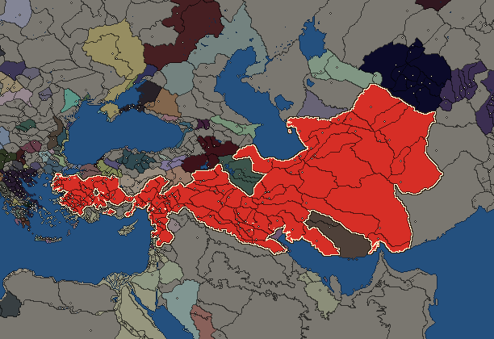
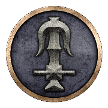

RTR: Imperium Surrectum
RTR: Imperium SurrectumSeleucid Empire


Eastern Hellenistic culture · believes  Macedonian · 115 settlements · capital Seleucia · 355,200 people · 119 characters · 27 faction units · 436 regional
Macedonian · 115 settlements · capital Seleucia · 355,200 people · 119 characters · 27 faction units · 436 regional
The campaign brief
"Fortune favours the bold." – Simonides of Keos
Roughly two decades before the battle of Chaironeia, a noblewoman called Laodike gave birth to her son in the small town Oropos in Macedonia. These days, one can hear the stories that Apollo himself, the god of music and the sun, was the true father of this child. But officially it was the son of Antiochos, a man of the army who hailed from the mountain area of Orestis. That boy was named Seleukos, and with his parents holding close relations to the royal court, he enjoyed a formidable education. Once Seleukos became a teenager, he served as a squire to king Philip II, and upon becoming a man, joined the new royal battle guard, the Hypaspists. After the battle of Chaironeia and the murder of Philip, the Hypaspists accompanied the demigod Alexander on his brave and magnificent adventures in the East. The red-haired hero brought down the empire of Persia, and the Hypaspists followed him through the endless deserts into India. Seleukos emerged not only as an impressive soldier, but also proved his abilities to command and organise. Thus, it was no surprise when the godly Alexander elected him for his elite Companions, the Hetairoi. At the battle on the river called Hydaspes in the mythical land of India, Seleukos commanded part of the right wing of the army and defeated the enemy's monstrous elephants.
Upon their return to Susa, Seleukos married Apame, a woman whose beauty grandly excelled that of her native Sogdia, a rocky badland in the wild northeast. Apame gave birth to Antiochos, the first and most beloved son of Seleukos. It was at this time that the gods on Olympus felt that Alexander had done enough in the world of the mortals, and he died in the palace of Babylon. A most ambitious and very Greek competition between his generals emerged, and Seleukos took part in the early Diadoch wars on the side of the royal regent Perdikkas, but later found an esteemed friend in Ptolemaios, who had become the pharaoh of Egypt. Together they put up a fierce resistance against the mighty Antigonos Monophtalmos, who only had one eye, but the ambition to rule the whole world. They defeated his young son Demetrios at Gaza in 312 BC and Ptolemaios sent his friend eastwards, to reclaim his rule over Babylon. Accompanied by only a small contingent of elite soldiers, Seleukos was joyfully welcomed in that ancient city, and it was then that he laid the foundation for his own empire.
When Antigonos heard of these events, he was furious and started a war against Babylon the following year. But the courageous Seleukos refused to give in and repelled the attacks of the One-Eyed time and again. After his victory, Seleukos advanced eastwards and was acclaimed as the new ruler of these Eastern people, also signing a worthy treaty with Sandrokottos (whom his own people call Chandragupta), the lord of the Indians. The brilliant Seleukos gave him empty deserts in return for 500 terrible war elephants. With those, he strengthened his army and then returned to the West, where he joined Ptolemaios and Lysimachos at the battle of Ipsos in 302 BC. In this heroic engagement, his elephants held off Demetrios Poliorketes' famed cavalry and Antigonos was finally killed. While Demetrios became a refugee and Seleukos was able to annex wide parts of Asia Minor and northern Phoenicia into his dominion, sadly a quarrel emerged between him and his friend, the Pharaoh. Both men, with only the best intentions, laid claim on the strategically important land of Koile Syria. For now, they settled their conflict peacefully, but that did not solve the problem in the long term.
In 286 BC he captured Demetrios and turned on Lysimachos, his last remaining foe, who ruled over his own little empire in Thrace. While Seleukos assembled his troops, rather cheerless news arrived from Alexandria, where the great Ptolemaois had died. His son Ptolemaios II succeeded him as Pharaoh, but his elder son Ptolemaios Keraunos was expelled. Upon arriving in Asia Minor, Seleukos decided to take Keraunos with him, thereby establishing a rather disturbed relationship with Ptolemaios II. The Seleucid Army met Lysimachos in battle at Kouroupedion in 281 BC, and both kings, who had campaigned from Macedon to India and back, and then fought endless further wars over the decades, rode into battle as old men. Seleukos won a decisive victory and Lysimachos paid with his life, which ended after 80 exhausting years. Seleukos now only had one last dream: to return to his native Macedon and hopefully unite it with his empire in the East. But when Keraunos realised what the price was, he betrayed him. The murder of Seleukos, who died, 77 years of age, after having done and achieved more in his life than most men could ever dream of, sent shockwaves through the Hellenistic world.
His son Antiochos thus faced a more than formidable challenge to keep the empire together when he inherited the kingship. Revolts broke out in Syria and Asia Minor; Bithynia and Cappadocia asserted their independence and Keraunos ruled in Macedon. To make bad matters worse, the Gauls ravaged Greece and the Bithynian dastard king invited them into Asia. Not fearing the ferocious Barbarians, Antiochos rode into battle and trampled the Celts with his mighty elephants. Seeing his rival king busy in the North, Ptolemaios II seized the chance and betrayed the old friendship of their fathers to invade Koile Syria only a few months after the Elephant Battle. Bold campaigns from both sides eventually failed, and a year ago Antiochos had to settle for peace with his most powerful foe. Now Damascus and the adjacent regions have fallen into the hands of our enemies, Cappadocia and Bithynia had to be forfeited and the Galatians have settled in central Anatolia.
But Antiochos possesses the greatest kingdom in the known world, and an army made up of the finest Macedonian and Greek soldiers, including the Hetairoi and Hypaspists, but also a vast reserve of native warriors and - of course! - the great herd of elephants who carried the day against the Galatians five years ago. His son has just come of age, the merchants of Antiocheia often travel far into the lands of India to bring the finest luxuries of the world to the court, and Antigonos Gonatas, a friend of Antiochos and rival to Ptolemaios II, now rules as king of Macedonia. The gods still hold a bright future for the Seleucid dynasty, but Antiochos must be wary of his enemies, internal as well as external, and wait for the right moment to strike and reclaim the lost lands in Syria and Asia Minor. May he be guided by Zeus to victory!
Starting settlements
Seleucid Empire begins with 115 settlements and 355,200 people.
| Settlement | Region | Size | Population | Already built | Settlement | Region | Size | Population | Already built |
|---|---|---|---|---|---|---|---|---|---|
| Seleucia (capital) | Mesopotamia | huge city | 16,000 | 16 buildings | Antioch | Syria | huge city | 17,000 | 13 buildings |
| Damascus | Damashq | city | 4,400 | 12 buildings | Edessa | Osrhoene | large town | 3,800 | 12 buildings |
| Antiocheia-Mygdonia | Mygdonia-Syria | city | 3,500 | 12 buildings | Arbela | Arbelitis | large town | 3,000 | 13 buildings |
| Doura-Europos | Tingene | large town | 2,100 | 13 buildings | Uruk | Orchoe | large city | 5,500 | 14 buildings |
| Susa | Sousiane | large city | 8,500 | 16 buildings | Ephesos | Ionia | large city | 10,000 | 16 buildings |
| Sardis | Lydia | large city | 11,000 | 13 buildings | Apameia-Kelainai | Paroreia Phrygia | large town | 5,000 | 12 buildings |
| Sagalassos | Pisidia | large town | 2,200 | 9 buildings | Side | Pamphylia | large town | 4,000 | 13 buildings |
| Ikonion | Lykaonia | large town | 2,800 | 12 buildings | Kybistra | Kappadokike Kilikia | town | 1,600 | 5 buildings |
| Tarsos | Kilikia | city | 5,000 | 15 buildings | Ekbatana | Media | city | 5,500 | 15 buildings |
| Europos-Rhagai | Rhagiane | large town | 3,200 | 13 buildings | Hekatompylos | Parthia | city | 3,800 | 12 buildings |
| Zadrakarta | Boreia Hyrkania | large town | 3,600 | 12 buildings | Gabai | Ano Persia | town | 2,000 | 7 buildings |
| Alexandreia-Karmania | Karmania | large town | 2,900 | 11 buildings | Prophthasia | Anaouon | city | 2,600 | 11 buildings |
| Alexandreia-Ariane | Ariane | city | 4,800 | 12 buildings | Antiocheia-Margiane | Margiane | large city | 6,500 | 14 buildings |
| Abydos | Propontis | large town | 2,800 | 10 buildings | Alexandreia-Troas | Troias | city | 4,600 | 14 buildings |
| Adramyttion | Adramyttenos Kolpos | large town | 3,400 | 12 buildings | Thyateira | Pelopeia | large town | 2,800 | 11 buildings |
| Smyrna | Nea Ionia | city | 3,600 | 13 buildings | Klazomenai | Klazomenia | large town | 3,500 | 11 buildings |
| Laodikeia-Katakekaumene | Katakekaumene Lykaonia | town | 1,600 | 6 buildings | Pessinous | Pessinountis | town | 1,800 | 7 buildings |
| Seleukeia-Kalykadnos | Anatolike Tracheiotis | large town | 2,800 | 13 buildings | Daskyleion | Mysia | large town | 2,900 | 13 buildings |
| Eukarpia | Orgasia | town | 1,700 | 6 buildings | Gordion | Megale Phrygia | large town | 2,600 | 10 buildings |
| Magnesia-Maiandros | Maiandros | large town | 2,600 | 12 buildings | Seleukeia-Tralleis | Euantheia | large town | 3,800 | 14 buildings |
| Kyrrhos | Kyrrhestike | large town | 3,400 | 13 buildings | Heliou Polis-Syria | Massyas Pedion | town | 1,800 | 8 buildings |
| Apameia-Syria | Apamene | large city | 5,600 | 13 buildings | Seleukeia-Pieria | Pieria-Syria | city | 6,600 | 15 buildings |
| Laodikeia-Paralos | Leuke Akte | city | 6,000 | 13 buildings | Byblos | Gebal | large town | 2,800 | 12 buildings |
| Beroia-Syria | Khalab | large town | 2,700 | 11 buildings | Doliche | Dolicheia | town | 1,600 | 6 buildings |
| Sareisa-Satalka | Gordyene | large town | 1,700 | 10 buildings | Chala | Chalonitis | town | 1,700 | 6 buildings |
| Babylon | Babylonia | large city | 7,000 | 15 buildings | Nikephorion | Nikephoreia | town | 1,900 | 7 buildings |
| Hierapolis | Bambyke | town | 2,400 | 5 buildings | Apameia-Sittakene | Sittakene | large town | 3,500 | 12 buildings |
| Artemita | Apolloniatis-Mesopotamia | large town | 2,300 | 12 buildings | Apameia-Zeugma | Zeugma-Euphrates | large town | 1,900 | 12 buildings |
| Arrhapa | Arrhapachitis | large town | 1,800 | 10 buildings | Seleukeia-Soloke | Elymais | large town | 3,300 | 12 buildings |
| Assur | Assyria | large town | 2,900 | 12 buildings | Nippur | Nippour | large town | 3,000 | 13 buildings |
| Is | Ankobaritis | town | 1,900 | 5 buildings | Sousia | Hesperos Ariane | town | 2,500 | 7 buildings |
| Antiocheia-Persis | Taokene | city | 2,600 | 14 buildings | Kyropolis-Kadousia | Kadousia | town | 1,900 | 8 buildings |
| Apameia-Rhagiane | Notia Parthia | large town | 2,800 | 11 buildings | Laodikeia-Media | Syromedia | town | 2,000 | 7 buildings |
| Tagai | Komisene | large town | 1,800 | 9 buildings | Amardion Phrourion | Amardokaia-Anariakaia | town | 1,400 | 4 buildings |
| Sirynx-Tambrax | Hyrkania | city | 4,100 | 14 buildings | Lampsakos | Pityoussa | city | 3,600 | 14 buildings |
| Skepsis | Ano Troias | large town | 2,000 | 10 buildings | Hypaipa | Kaystros | town | 1,600 | 7 buildings |
| Magnesia-Sipylos | Sipylos | large town | 1,700 | 11 buildings | Toriaion | Anatolike Phrygia | town | 1,800 | 5 buildings |
| Hierapolis-Charonia | Charonia | town | 2,100 | 8 buildings | Blaundos | Mlaundos | town | 1,600 | 5 buildings |
| Aizanoi | Aizanitis | town | 1,800 | 3 buildings | Aphrodisias | Lelegia | town | 1,900 | 5 buildings |
| Antiocheia-Alabanda | Marsyas | town | 1,900 | 5 buildings | Stratonikeia | Idrias | large town | 2,300 | 11 buildings |
| Antiocheia-Pisidia | Paroreia Pisidia | town | 1,500 | 5 buildings | Gorbeous | Korbeous | town | 1,300 | 5 buildings |
| Issos | Issikos Kolpos | large town | 2,100 | 12 buildings | Kastabala | Pyramos | town | 2,000 | 6 buildings |
| Melita | Melitene | town | 2,500 | 8 buildings | Komana-Kappadokia | Kataonia | large town | 2,800 | 9 buildings |
| Mallos | Mallotis | large town | 3,300 | 12 buildings | Soloi-Kilikia | Mese Kilikia | large town | 2,400 | 13 buildings |
| Arethousa | Emesene | town | 1,800 | 7 buildings | Chalkis-Belos | Belos | town | 2,000 | 5 buildings |
| Amathe | Khamat | town | 1,800 | 6 buildings | Lysimacheia | Kardia | city | 4,300 | 15 buildings |
| Elaious | Elaiousa | large town | 2,100 | 10 buildings | Pinaka | Notia Gordyene | large town | 2,000 | 11 buildings |
| Dorylaion | Dorylaia | town | 1,400 | 6 buildings | Ninos | Ninawa | large town | 1,600 | 12 buildings |
| Karrhai | Kharranu | large town | 1,500 | 11 buildings | Amphipolis-Chalybonitis | Anatolike Chalybonitis | large town | 2,200 | 10 buildings |
| Anthemousias-Batnai | Anthemousia | town | 1,800 | 6 buildings | Thelme | Dytike Apolloniatis | large town | 1,900 | 11 buildings |
| Sittake | Boreia Sittakene | city | 1,800 | 11 buildings | Charmande | Chaldaia | town | 1,300 | 4 buildings |
| Sadrakai | Artakene | town | 1,800 | 3 buildings | Seleukeia-Erythtreia | Paralia Chaldaia | large town | 1,900 | 13 buildings |
| Nisa | Nisaia | town | 2,200 | 7 buildings | Apauarktike | Apauarktikene | town | 1,500 | 5 buildings |
| Alexandreia-Drangiane | Drangiane | large town | 2,600 | 10 buildings | Adrapana | Sagartia | large town | 2,000 | 9 buildings |
| Derbikon Taphai | Derbikia | town | 1,000 | 5 buildings | Zetis | Notia Karmania | large town | 1,400 | 14 buildings |
| Achaia Polis | Mese Ariane | town | 1,400 | 4 buildings | Tapyron Phrourion | Tapyria-Kyrtia | town | 1,200 | 3 buildings |
| Ouxion Phrourion | Ouxia-Paraitakene | town | 1,500 | 5 buildings | Kossaion Phrourion | Kossaia-Mardia | town | 1,700 | 5 buildings |
| Iasonion | Notia Margiane | town | 1,600 | 3 buildings |
What is already built in each settlement
Seleucia, in Mesopotamia — Great Treasury, State Mint (Civic), Imperial Palace, Stone Wall, Grain Silos (Food trade), Homeland, Aqueduct (Sanitation), Region Information Scroll, Highways, Irrigation Aqueducts (Crops), Large Forum, Large Temple, Odeon (Leisure), Baking Guild (Urban), Fruit Dryer (Rural), Basic Armoury
Antioch, in Syria — Imperial Palace, Stone Wall, Homeland, Region Information Scroll, Highways, Healing Sanctuary (Healing), Irrigation Aqueducts (Crops), Large Forum, Paradise of Daphne, State Mint (Civic), Silk Market (Urban), Fruit Dryer (Rural), Basic Armoury
Damascus, in Damashq — Governor's Palace, Small Stone Wall, Direct Rule, Region Information Scroll, Paved Roads, Physician's Clinics (Healing), Basin Irrigation (Crops), Local Market, Temple, Perfume Maker (Urban), Vineyard (Rural), Waystations and Garrisons
Edessa, in Osrhoene — Large Colony, Governor's Villa, Wooden Palisade, Direct Rule, Cisterns (Sanitation), Region Information Scroll, Local Market, Water Covenants (Husbandry), Saltworks (Industry), Shrine, Weavery (Urban), Local Garrisons
Antiocheia-Mygdonia, in Mygdonia-Syria — Large Colony, Governor's Palace, Small Stone Wall, Direct Rule, Sewers (Sanitation), Region Information Scroll, Magistrates' Court (Civic), Local Market, Water Covenants (Husbandry), Large Temple, Weavery (Urban), Basic Armoury
Arbela, in Arbelitis — Small Colony, Governor's Villa, Wooden Palisade, Indirect Rule, Cisterns (Sanitation), Region Information Scroll, Roads, Local Market, Tar Gatherer (Industry), Contour Furrows (Crops), Shrine, Horse Trainer (Rural), Waystations and Garrisons
Doura-Europos, in Tingene — Large Colony, Governor's Villa, Wooden Palisade, Direct Rule, Cisterns (Sanitation), Region Information Scroll, Roads, Irrigation Ditches (Crops), Local Barter, Tar Gatherer (Industry), Temple, Camel Herd (Rural), Waystations and Garrisons
Uruk, in Orchoe — Pro-Consul's Palace, Stone Wall, Dependency, Public Baths (Sanitation), Region Information Scroll, Paved Roads, Irrigation Aqueducts (Crops), Forum, Grain Silos (Food trade), Magistrates' Court (Civic), Large Temple, Brewing Quarter (Urban), Date & Palm Wine Market (Rural), Waystations and Garrisons
Susa, in Sousiane — Large Colony, Pro-Consul's Palace, Stone Wall, Direct Rule, Region Information Scroll, Highways, Irrigation Aqueducts (Crops), Forum, Public Baths (Sanitation), Grain Silos (Food trade), State Mint (Civic), Large Temple, Pitch Rendering Kilns (Industry), Brewing Quarter (Urban), Date & Palm Wine Market (Rural), Permanent Military Garrisons
Ephesos, in Ionia — Pro-Consul's Palace, Stone Wall, Dependency, Public Baths (Sanitation), Region Information Scroll, Paved Roads, Canal Network (Crops), Forum, Grain Silos (Food trade), Dockyard, Local Mint (Civic), Large Temple, Marble Quarry (Industry), Slave Auction (Urban), Olive Oil Mill (Rural), Waystations and Garrisons
Sardis, in Lydia — Large Colony, Pro-Consul's Palace, Stone Wall, Direct Rule, Public Baths (Sanitation), Region Information Scroll, Paved Roads, Canal Network (Crops), Forum, State Mint (Civic), Large Temple, Textile Factory (Urban), Basic Armoury
Apameia-Kelainai, in Paroreia Phrygia — Small Colony, Governor's Villa, Wooden Palisade, Direct Rule, Cisterns (Sanitation), Region Information Scroll, Roads, Local Barter, Contour Furrows (Crops), Temple, Olive Grove (Rural), Basic Armoury
Sagalassos, in Pisidia — Governor's Villa, Wooden Palisade, Dependency, Region Information Scroll, Roads, Irrigation Ditches (Crops), Local Barter, Shrine, Beekepers (Rural)
Side, in Pamphylia — Governor's Villa, Wooden Palisade, Dependency, Cisterns (Sanitation), Region Information Scroll, Roads, Irrigation Ditches (Crops), Local Barter, Trade Port, Stone Quarry (Industry), Shrine, Olive Grove (Rural), Local Garrisons
Ikonion, in Lykaonia — Governor's Villa, Wooden Palisade, Indirect Rule, Highland Pasturing (Husbandry), Region Information Scroll, Roads, Local Market, Saltworks (Industry), Shrine, Weavery (Urban), Hunting Grounds (Rural), Local Garrisons
Kybistra, in Kappadokike Kilikia — Governor's House, Indirect Rule, Region Information Scroll, Local Barter, Local Garrisons
Tarsos, in Kilikia — Small Colony, Governor's Palace, Small Stone Wall, Grain Silos (Food trade), Direct Rule, Sewers (Sanitation), Region Information Scroll, Paved Roads, Basin Irrigation (Crops), Local Market, Shipwright, Large Temple, Milling District (Urban), Sawmill (Rural), Waystations and Garrisons
Ekbatana, in Media — Small Colony, Governor's Palace, Small Stone Wall, Direct Rule, Sewers (Sanitation), Region Information Scroll, Paved Roads, Basin Irrigation (Crops), Local Market, The Temple of Anahita at Ecbatana, Local Mint (Civic), Salt Refiner (Industry), Tannery (Urban), Horse Breeder (Rural), Permanent Military Garrisons
Europos-Rhagai, in Rhagiane — Large Colony, Governor's Villa, Wooden Palisade, Direct Rule, Region Information Scroll, Roads, Local Market, Qanat Network (Crops), Blacksmith (Industry), Shrine, Odeon (Leisure), Orchards (Rural), Local Garrisons
Hekatompylos, in Parthia — Large Colony, Governor's Palace, Small Stone Wall, Direct Rule, Region Information Scroll, Magistrates' Court (Civic), Local Market, Water Covenants (Husbandry), Salt Refiner (Industry), Temple, Spice Stall (Urban), Waystations and Garrisons
Zadrakarta, in Boreia Hyrkania — Governor's Villa, Wooden Palisade, Direct Rule, Cisterns (Sanitation), Region Information Scroll, Roads, Basin Irrigation (Crops), Local Barter, Trade Port, Temple, Grape Orchards (Rural), Waystations and Garrisons
Gabai, in Ano Persia — Governor's House, Direct Rule, Region Information Scroll, Local Barter, Shrine, Camel Herd (Rural), Local Garrisons
Alexandreia-Karmania, in Karmania — Small Colony, Governor's Villa, Wooden Palisade, Direct Rule, Region Information Scroll, Roads, Local Market, Qanat Network (Crops), Temple, Grape Orchards (Rural), Local Garrisons
Prophthasia, in Anaouon — Small Colony, Governor's Palace, Small Stone Wall, Direct Rule, Sewers (Sanitation), Region Information Scroll, Local Market, Water Covenants (Husbandry), Temple, Tannery (Urban), Waystations and Garrisons
Alexandreia-Ariane, in Ariane — Small Colony, Governor's Palace, Small Stone Wall, Direct Rule, Sewers (Sanitation), Highland Pasturing (Husbandry), Region Information Scroll, Local Market, Mines (Industry), Large Temple, Vineyard (Rural), Local Garrisons
Antiocheia-Margiane, in Margiane — Large Colony, Pro-Consul's Palace, Stone Wall, Direct Rule, Region Information Scroll, Highways, Canal Network (Crops), Forum, Public Baths (Sanitation), Magistrates' Court (Civic), Large Temple, Textile Factory (Urban), Winery (Rural), Waystations and Garrisons
Abydos, in Propontis — Governor's Villa, Wooden Palisade, Dependency, Region Information Scroll, Roads, Local Barter, Trade Port, Open Field Pasturing (Husbandry), Temple, Local Garrisons
Alexandreia-Troas, in Troias — Large Colony, Governor's Palace, Small Stone Wall, Indirect Rule, Region Information Scroll, Paved Roads, Local Market, Shipwright, Contour Furrows (Crops), State Mint (Civic), Temple, Stone Cutter (Industry), Fruit Dryer (Rural), Waystations and Garrisons
Adramyttion, in Adramyttenos Kolpos — Governor's Villa, Wooden Palisade, Dependency, Region Information Scroll, Roads, Local Healer (Healing), Irrigation Ditches (Crops), Local Barter, Tar Gatherer (Industry), Trade Port, Temple, Waystations and Garrisons
Thyateira, in Pelopeia — Large Colony, Governor's Villa, Wooden Palisade, Direct Rule, Cisterns (Sanitation), Slope Pasturing (Husbandry), Region Information Scroll, Roads, Local Barter, Shrine, Training Grounds
Smyrna, in Nea Ionia — Governor's Palace, Small Stone Wall, Dependency, Sewers (Sanitation), Region Information Scroll, Paved Roads, Basin Irrigation (Crops), Local Market, Shipwright, Temple, Perfume Maker (Urban), Vineyard (Rural), Waystations and Garrisons
Klazomenai, in Klazomenia — Governor's Villa, Wooden Palisade, Dependency, Region Information Scroll, Roads, Local Market, Trade Port, Contour Furrows (Crops), Temple, Olive Press (Rural), Waystations and Garrisons
Laodikeia-Katakekaumene, in Katakekaumene Lykaonia — Small Colony, Governor's House, Direct Rule, Region Information Scroll, Shrine, Local Garrisons
Pessinous, in Pessinountis — Governor's House, Dependency, Slope Pasturing (Husbandry), Region Information Scroll, Local Barter, Hemp Farm (Rural), Training Grounds
Seleukeia-Kalykadnos, in Anatolike Tracheiotis — Large Colony, Governor's Villa, Wooden Palisade, Direct Rule, Cisterns (Sanitation), Slope Pasturing (Husbandry), Region Information Scroll, Roads, Local Market, Trade Port, Temple, Lumber Camp (Rural), Training Grounds
Daskyleion, in Mysia — Large Colony, Governor's Villa, Wooden Palisade, Small Granary (Food trade), Indirect Rule, Cisterns (Sanitation), Highland Pasturing (Husbandry), Region Information Scroll, Roads, Local Barter, Trade Port, Shrine, Local Garrisons
Eukarpia, in Orgasia — Small Colony, Governor's House, Indirect Rule, Region Information Scroll, Shrine, Local Garrisons
Gordion, in Megale Phrygia — Governor's Villa, Wooden Palisade, Indirect Rule, Cisterns (Sanitation), Highland Pasturing (Husbandry), Region Information Scroll, Roads, Local Barter, Shrine, Horse Trainer (Rural)
Magnesia-Maiandros, in Maiandros — Governor's Villa, Wooden Palisade, Small Granary (Food trade), Indirect Rule, Cisterns (Sanitation), Region Information Scroll, Roads, Basin Irrigation (Crops), Local Barter, Temple, Grape Orchards (Rural), Local Garrisons
Seleukeia-Tralleis, in Euantheia — Small Colony, Governor's Villa, Wooden Palisade, Small Granary (Food trade), Direct Rule, Cisterns (Sanitation), Region Information Scroll, Roads, Basin Irrigation (Crops), Local Market, Temple, Odeon (Leisure), Orchards (Rural), Local Garrisons
Kyrrhos, in Kyrrhestike — Large Colony, Governor's Villa, Wooden Palisade, Direct Rule, Cisterns (Sanitation), Region Information Scroll, Roads, Irrigation Ditches (Crops), Local Market, Stone Quarry (Industry), Temple, Olive Grove (Rural), Local Garrisons
Heliou Polis-Syria, in Massyas Pedion — Small Colony, Governor's House, Direct Rule, Region Information Scroll, Local Barter, Shrine, Grape Orchards (Rural), Local Garrisons
Apameia-Syria, in Apamene — Pro-Consul's Palace, Stone Wall, Homeland, Region Information Scroll, Highways, Forum, Breeding Farms (Husbandry), Public Baths (Sanitation), State Mint (Civic), Large Temple, Leatherworker (Urban), Horse Breeder (Rural), Basic Armoury
Seleukeia-Pieria, in Pieria-Syria — Governor's Palace, Small Stone Wall, Homeland, Sewers (Sanitation), Highland Pasturing (Husbandry), Region Information Scroll, Paved Roads, Local Market, Shipwright, Odeon (Leisure), Magistrates' Court (Civic), Temple, Pitch Rendering Kilns (Industry), Fish Salter (Urban), Waystations and Garrisons
Laodikeia-Paralos, in Leuke Akte — Governor's Palace, Small Stone Wall, Homeland, Sewers (Sanitation), Region Information Scroll, Paved Roads, Basin Irrigation (Crops), Local Market, Shipwright, State Mint (Civic), Temple, Vineyard (Rural), Training Grounds
Byblos, in Gebal — Governor's Villa, Wooden Palisade, Dependency, Region Information Scroll, Roads, Irrigation Ditches (Crops), Local Market, Tar Gatherer (Industry), Trade Port, Shrine, Sawmill (Rural), Local Garrisons
Beroia-Syria, in Khalab — Large Colony, Governor's Villa, Wooden Palisade, Direct Rule, Region Information Scroll, Roads, Local Market, Contour Furrows (Crops), Temple, Olive Grove (Rural), Training Grounds
Doliche, in Dolicheia — Small Colony, Governor's House, Direct Rule, Region Information Scroll, Shrine, Olive Grove (Rural)
Sareisa-Satalka, in Gordyene — Governor's Villa, Wooden Palisade, Indirect Rule, Slope Pasturing (Husbandry), Region Information Scroll, Local Healer (Healing), Local Market, Shrine, Herb gatherer (Urban), Local Garrisons
Chala, in Chalonitis — Small Colony, Governor's House, Direct Rule, Region Information Scroll, Shrine, Local Garrisons
Babylon, in Babylonia — Pro-Consul's Palace, Stone Wall, Indirect Rule, Region Information Scroll, Highways, Irrigation Aqueducts (Crops), Forum, Public Baths (Sanitation), Grain Silos (Food trade), Magistrates' Court (Civic), Large Temple, Stone Cutter (Industry), Brewing Quarter (Urban), Date & Palm Wine Market (Rural), Waystations and Garrisons
Nikephorion, in Nikephoreia — Small Colony, Governor's House, Direct Rule, Region Information Scroll, Irrigation Ditches (Crops), Hunting Grounds (Rural), Local Garrisons
Hierapolis, in Bambyke — Governor's House, Dependency, Region Information Scroll, Irrigation Ditches (Crops), Local Barter
Apameia-Sittakene, in Sittakene — Large Colony, Governor's Villa, Wooden Palisade, Direct Rule, Region Information Scroll, Local Healer (Healing), Local Barter, Marsh Drainage Channels (Crops), Saltworks (Industry), Shrine, Orchards (Rural), Local Garrisons
Artemita, in Apolloniatis-Mesopotamia — Small Colony, Governor's Villa, Wooden Palisade, Direct Rule, Cisterns (Sanitation), Region Information Scroll, Roads, Basin Irrigation (Crops), Local Barter, Shrine, Odeon (Leisure), Training Grounds
Apameia-Zeugma, in Zeugma-Euphrates — Large Colony, Governor's Villa, Wooden Palisade, Direct Rule, Cisterns (Sanitation), Region Information Scroll, Roads, Irrigation Ditches (Crops), Local Barter, Temple, Orchards (Rural), Waystations and Garrisons
Arrhapa, in Arrhapachitis — Governor's Villa, Wooden Palisade, Indirect Rule, Region Information Scroll, Irrigation Ditches (Crops), Local Market, Shrine, Weavery (Urban), Beekepers (Rural), Local Garrisons
Seleukeia-Soloke, in Elymais — Large Colony, Governor's Villa, Wooden Palisade, Direct Rule, Region Information Scroll, Local Market, Trade Port, Qanat Network (Crops), Temple, Odeon (Leisure), Date Palm Plantation (Rural), Local Garrisons
Assur, in Assyria — Governor's Villa, Wooden Palisade, Small Granary (Food trade), Dependency, Cisterns (Sanitation), Region Information Scroll, Roads, Basin Irrigation (Crops), Local Market, Shrine, Milling District (Urban), Local Garrisons
Nippur, in Nippour — Governor's Villa, Wooden Palisade, Small Granary (Food trade), Dependency, Cisterns (Sanitation), Region Information Scroll, Roads, Basin Irrigation (Crops), Local Market, Shrine, Weavery (Urban), Orchards (Rural), Local Garrisons
Is, in Ankobaritis — Governor's House, Indirect Rule, Region Information Scroll, Local Barter, Shrine
Sousia, in Hesperos Ariane — Governor's House, Indirect Rule, Slope Pasturing (Husbandry), Region Information Scroll, Local Barter, Shrine, Local Garrisons
Antiocheia-Persis, in Taokene — Large Colony, Governor's Palace, Small Stone Wall, Direct Rule, Region Information Scroll, Basin Irrigation (Crops), Magistrates' Court (Civic), Local Market, Shipwright, Temple, Odeon (Leisure), Fish Salter (Urban), Palm Wine Maker (Rural), Waystations and Garrisons
Kyropolis-Kadousia, in Kadousia — Governor's House, Dependency, Region Information Scroll, Local Barter, Trade Port, Shrine, Beekepers (Rural), Local Garrisons
Apameia-Rhagiane, in Notia Parthia — Large Colony, Governor's Villa, Wooden Palisade, Direct Rule, Cisterns (Sanitation), Slope Pasturing (Husbandry), Region Information Scroll, Roads, Local Market, Shrine, Local Garrisons
Laodikeia-Media, in Syromedia — Small Colony, Governor's House, Direct Rule, Region Information Scroll, Local Barter, Shrine, Training Grounds
Tagai, in Komisene — Governor's Villa, Wooden Palisade, Indirect Rule, Region Information Scroll, Roads, Local Market, Qanat Well (Crops), Shrine, Local Garrisons
Amardion Phrourion, in Amardokaia-Anariakaia — Governor's House, Dependency, Region Information Scroll, Local Barter
Sirynx-Tambrax, in Hyrkania — Small Colony, Governor's Palace, Small Stone Wall, Direct Rule, Sewers (Sanitation), Highland Pasturing (Husbandry), Region Information Scroll, Paved Roads, Local Market, Trade Port, Odeon (Leisure), Temple, Fur Market (Rural), Waystations and Garrisons
Lampsakos, in Pityoussa — Governor's Palace, Small Stone Wall, Dependency, Sewers (Sanitation), Region Information Scroll, Paved Roads, Basin Irrigation (Crops), Local Market, Shipwright, Local Mint (Civic), Temple, Salted Fish Market (Urban), Vineyard (Rural), Waystations and Garrisons
Skepsis, in Ano Troias — Governor's Villa, Wooden Palisade, Dependency, Cisterns (Sanitation), Slope Pasturing (Husbandry), Region Information Scroll, Roads, Local Market, Shrine, Local Garrisons
Hypaipa, in Kaystros — Governor's House, Indirect Rule, Cisterns (Sanitation), Region Information Scroll, Irrigation Ditches (Crops), Local Barter, Grape Orchards (Rural)
Magnesia-Sipylos, in Sipylos — Large Colony, Governor's Villa, Wooden Palisade, Direct Rule, Cisterns (Sanitation), Region Information Scroll, Roads, Basin Irrigation (Crops), Local Barter, Shrine, Local Garrisons
Toriaion, in Anatolike Phrygia — Small Colony, Governor's House, Direct Rule, Region Information Scroll, Shrine
Hierapolis-Charonia, in Charonia — Small Colony, Governor's House, Indirect Rule, Cisterns (Sanitation), Region Information Scroll, Irrigation Ditches (Crops), Local Barter, Local Garrisons
Blaundos, in Mlaundos — Small Colony, Governor's House, Direct Rule, Region Information Scroll, Training Grounds
Aizanoi, in Aizanitis — Governor's House, Dependency, Region Information Scroll
Aphrodisias, in Lelegia — Governor's House, Dependency, Region Information Scroll, Local Barter, Lumber Camp (Rural)
Antiocheia-Alabanda, in Marsyas — Governor's House, Indirect Rule, Region Information Scroll, Shrine, Local Garrisons
Stratonikeia, in Idrias — Large Colony, Governor's Villa, Wooden Palisade, Direct Rule, Slope Pasturing (Husbandry), Region Information Scroll, Roads, Local Barter, Stone Quarry (Industry), Temple, Training Grounds
Antiocheia-Pisidia, in Paroreia Pisidia — Small Colony, Governor's House, Direct Rule, Region Information Scroll, Training Grounds
Gorbeous, in Korbeous — Governor's House, Indirect Rule, Slope Pasturing (Husbandry), Region Information Scroll, Local Garrisons
Issos, in Issikos Kolpos — Governor's Villa, Wooden Palisade, Indirect Rule, Cisterns (Sanitation), Slope Pasturing (Husbandry), Region Information Scroll, Roads, Local Barter, Trade Port, Shrine, Lumber Camp (Rural), Local Garrisons
Kastabala, in Pyramos — Governor's House, Dependency, Region Information Scroll, Irrigation Ditches (Crops), Local Barter, Grape Orchards (Rural)
Melita, in Melitene — Governor's House, Indirect Rule, Region Information Scroll, Irrigation Ditches (Crops), Local Barter, Shrine, Orchards (Rural), Local Garrisons
Komana-Kappadokia, in Kataonia — Governor's Villa, Wooden Palisade, Dependency, Cisterns (Sanitation), Highland Pasturing (Husbandry), Region Information Scroll, Local Market, Shrine, Tannery (Urban)
Mallos, in Mallotis — Governor's Villa, Wooden Palisade, Indirect Rule, Cisterns (Sanitation), Region Information Scroll, Local Market, Trade Port, Temple, Seasonal Pasture Rotation (Adaptive husbandry), Tannery (Urban), Hemp Farm (Rural), Local Garrisons
Soloi-Kilikia, in Mese Kilikia — Governor's Villa, Wooden Palisade, Dependency, Cisterns (Sanitation), Slope Pasturing (Husbandry), Region Information Scroll, Roads, Local Market, Trade Port, Shrine, Spice Stall (Urban), Orchards (Rural), Local Garrisons
Arethousa, in Emesene — Small Colony, Governor's House, Direct Rule, Region Information Scroll, Irrigation Ditches (Crops), Shrine, Local Garrisons
Chalkis-Belos, in Belos — Small Colony, Governor's House, Direct Rule, Region Information Scroll, Olive Grove (Rural)
Amathe, in Khamat — Governor's House, Indirect Rule, Region Information Scroll, Irrigation Ditches (Crops), Local Barter, Hunting Grounds (Rural)
Lysimacheia, in Kardia — Large Colony, Governor's Palace, Small Stone Wall, Grain Silos (Food trade), Direct Rule, Sewers (Sanitation), Region Information Scroll, Paved Roads, Basin Irrigation (Crops), Local Market, Trade Port, Magistrates' Court (Civic), Temple, Milling District (Urban), Waystations and Garrisons
Elaious, in Elaiousa — Governor's Villa, Wooden Palisade, Indirect Rule, Region Information Scroll, Roads, Irrigation Ditches (Crops), Local Barter, Trade Port, Shrine, Local Garrisons
Pinaka, in Notia Gordyene — Governor's Villa, Wooden Palisade, Dependency, Cisterns (Sanitation), Slope Pasturing (Husbandry), Region Information Scroll, Local Market, Tar Gatherer (Industry), Shrine, Hunting Grounds (Rural), Local Garrisons
Dorylaion, in Dorylaia — Small Colony, Governor's House, Indirect Rule, Slope Pasturing (Husbandry), Region Information Scroll, Local Barter
Ninos, in Ninawa — Small Colony, Governor's Villa, Wooden Palisade, Indirect Rule, Cisterns (Sanitation), Region Information Scroll, Roads, Local Barter, Enclosures (Husbandry), Temple, Grape Orchards (Rural), Local Garrisons
Karrhai, in Kharranu — Small Colony, Governor's Villa, Wooden Palisade, Direct Rule, Region Information Scroll, Local Healer (Healing), Local Market, Nomad Communal Herding (Husbandry), Shrine, Herb gatherer (Urban), Local Garrisons
Amphipolis-Chalybonitis, in Anatolike Chalybonitis — Large Colony, Governor's Villa, Wooden Palisade, Direct Rule, Cisterns (Sanitation), Region Information Scroll, Local Barter, Nomad Communal Herding (Husbandry), Shrine, Training Grounds
Anthemousias-Batnai, in Anthemousia — Small Colony, Governor's House, Indirect Rule, Region Information Scroll, Irrigation Ditches (Crops), Training Grounds
Thelme, in Dytike Apolloniatis — Governor's Villa, Wooden Palisade, Small Granary (Food trade), Dependency, Cisterns (Sanitation), Region Information Scroll, Roads, Basin Irrigation (Crops), Local Barter, Shrine, Local Garrisons
Sittake, in Boreia Sittakene — Large Colony, Governor's Palace, Small Stone Wall, Indirect Rule, Sewers (Sanitation), Region Information Scroll, Local Market, Reclamation Embankments (Crops), Temple, Fruit Dryer (Rural), Local Garrisons
Charmande, in Chaldaia — Governor's House, Indirect Rule, Region Information Scroll, Local Barter
Sadrakai, in Artakene — Governor's House, Dependency, Region Information Scroll
Seleukeia-Erythtreia, in Paralia Chaldaia — Small Colony, Governor's Villa, Wooden Palisade, Direct Rule, Cisterns (Sanitation), Region Information Scroll, Irrigation Ditches (Crops), Local Barter, Tar Gatherer (Industry), Trade Port, Shrine, Date Palm Plantation (Rural), Waystations and Garrisons
Nisa, in Nisaia — Governor's House, Dependency, Region Information Scroll, Local Barter, Nomad Communal Herding (Husbandry), Horse Trainer (Rural), Training Grounds
Apauarktike, in Apauarktikene — Governor's House, Dependency, Region Information Scroll, Shrine, Local Garrisons
Alexandreia-Drangiane, in Drangiane — Small Colony, Governor's Villa, Wooden Palisade, Direct Rule, Cisterns (Sanitation), Region Information Scroll, Irrigation Ditches (Crops), Local Market, Shrine, Local Garrisons
Adrapana, in Sagartia — Governor's Villa, Wooden Palisade, Indirect Rule, Slope Pasturing (Husbandry), Region Information Scroll, Local Barter, Temple, Horse Trainer (Rural), Local Garrisons
Derbikon Taphai, in Derbikia — Governor's House, Dependency, Region Information Scroll, Nomad Communal Herding (Husbandry), Camel Herd (Rural)
Zetis, in Notia Karmania — Governor's Villa, Wooden Palisade, Indirect Rule, Slope Pasturing (Husbandry), Region Information Scroll, Roads, Local Healer (Healing), Local Market, Trade Port, Saltworks (Industry), Shrine, Herb gatherer (Urban), Palm Wine Maker (Rural), Local Garrisons
Achaia Polis, in Mese Ariane — Small Colony, Governor's House, Direct Rule, Region Information Scroll
Tapyron Phrourion, in Tapyria-Kyrtia — Governor's House, Dependency, Region Information Scroll
Ouxion Phrourion, in Ouxia-Paraitakene — Governor's House, Dependency, Slope Pasturing (Husbandry), Region Information Scroll, Local Barter
Kossaion Phrourion, in Kossaia-Mardia — Governor's House, Dependency, Region Information Scroll, Local Barter, Hunting Grounds (Rural)
Iasonion, in Notia Margiane — Governor's House, Indirect Rule, Region Information Scroll
Starting characters
| Name | Role | Age | Name | Role | Age | Name | Role | Age | Name | Role | Age |
|---|---|---|---|---|---|---|---|---|---|---|---|
| Antiochos | General | 53 | Seleukos | General | 23 | Achaios | General | 47 | Alexandros | General | 24 |
| Banabelos | General | 51 | Andromachos | General | 20 | Antiochos | General | 16 | sub faction parni | Andragoras | 30 |
| Antipatros | General | 42 | Nenis | General | 55 | sub faction cappadocia | Smerdis | 45 | Karos | General | 31 |
| Baias | General | 26 | Timarchos | General | 22 | Kilasarbes | General | 44 | Apollodoros | General | 27 |
| Choirilos | General | 24 | Gyras | General | 32 | Kleades | General | 47 | Leonatos | General | 36 |
| sub faction parni | Anu | 24 | Kassandros | General | 42 | Theodotas | General | 45 | Paramonos | General | 27 |
| Bakis | General | 31 | Koinos | General | 39 | Deinokratis | General | 48 | Marsias | General | 51 |
| Meleagros | General | 42 | Metrophanes | General | 38 | Kotys | General | 45 | Nikandros | General | 32 |
| sub faction parni | Omanes | 22 | Alexandros | General | 29 | Anchises | General | 53 | sub faction galatians | Deiotaros | 60 |
| sub faction galatians | Aioiorix | 39 | Ptolemaios | General | 44 | Antipatros | General | 40 | Aristoxenos | General | 31 |
| Asphalion | General | 32 | sub faction carthage | Baalyathon | 33 | Abantidas | General | 27 | Paterinos | General | 28 |
| Kallisthenes | General | 37 | Kleitos | General | 28 | sub faction parni | Anu | 50 | Admatos | General | 27 |
| Kamnaskires | General | 33 | Philotas | General | 27 | Neoptolemos | General | 29 | Deukalos | General | 27 |
| Kleisthenes | General | 32 | Skymnos | General | 25 | Aristodikides | General | 36 | Charmides | General | 37 |
| Atys | General | 23 | Dionysios | General | 30 | Lachares | General | 43 | Tychasios | General | 25 |
| sub faction parni | Mithres | 33 | sub faction selge | Midas | 33 | Papas | General | 21 | Patophates | General | 46 |
| Dosiades | General | 35 | Thales | General | 27 | Melanthios | General | 47 | Menippos | General | 30 |
| Asitawada | General | 30 | sub faction cappadocia | Dryenes | 44 | sub faction cappadocia | Kousios | 41 | Mylleas | General | 32 |
| Diagoras | General | 40 | Damasos | General | 31 | Nearchos | General | 19 | Teres | General | 23 |
| Bolon | General | 17 | Demophanes | General | 44 | Amophaon | General | 42 | Akylos | General | 23 |
| Polyperchon | General | 27 | Ariphron | General | 33 | Agis | General | 24 | Artemios | General | 29 |
| Abantidas | General | 34 | Timarchos | General | 44 | Asphalion | General | 20 | Diagoras | General | 58 |
| Deimachos | General | 40 | Deimachos | General | 24 | Deukalos | General | 38 | Achaios | General | 44 |
| Menedamos | General | 28 | Polythros | General | 26 | Skymnos | General | 43 | Polyperchon | General | 41 |
| Dionysios | General | 41 | Antipatros | General | 42 | Mylleas | General | 37 | Deimachos | General | 31 |
| Kassandros | General | 47 | Karos | General | 49 | Polybios | General | 53 | Meniskos | General | 16 |
| Agis | General | 40 | Kotys | General | 37 | Thales | General | 24 | Seleukos | General | 56 |
| Lachares | General | 57 | Charmides | General | 32 | Anchises | General | 22 | Leonatos | General | 42 |
| Philotas | General | 17 | Kleisthenes | General | 31 | Kleades | General | 42 | Aristokrates | General | 45 |
| Polythros | General | 25 | Nearchos | General | 42 | Euthydemos | Admiral | 20 |
Units you can recruit
463 unit types are available to Seleucid Empire: 27 faction units and 436 regional. The requirement column is what the mod states for the easiest route to that unit.
Faction units
| Unit | Requires | Unit | Requires | Unit | Requires | Unit | Requires |
|---|---|---|---|---|---|---|---|
| Seleucid Argyraspides | Tier 2 Military Industrial Complex | Seleucid Argyraspides (Reform Swordsmen) | Tier 2 Military Industrial Complex · Seleucid reforms 3 | Ballistas | Government Building · not Small School (Civic) | Seleucid Chrysaspides | Garrison Building or Tier 1 Military Industrial Complex · Seleucid reforms 1 |
| Seleucid General's Bodyguard (Late) | Tier 2 Military Industrial Complex · Seleucid reforms 2 | Greek Archers | Garrison Building or Tier 1 Military Industrial Complex | Greek Hoplites | Garrison Building or Tier 1 Military Industrial Complex | Greek Peltasts | Garrison Building or Tier 1 Military Industrial Complex |
| Greek Slingers | Garrison Building or Tier 1 Military Industrial Complex | Large Lithoboloi | Government Building · not Small School (Civic) | Lithoboloi | Government Building · not Small School (Civic) | Mercenary Indian War Elephants | Tier 2 Military Industrial Complex · Elephants |
| Mercenary Thracian Sica Cavalry | Garrison Building or Tier 1 Military Industrial Complex · Thracian sica cavalry reforms · Requires horses resource, if not available locally you can build Fine Horse Exports to supply it | Neocretan Archers | Tier 2 Military Industrial Complex · Seleucid reforms 1 | Prodromoi | Garrison Building or Tier 1 Military Industrial Complex | Akontistai | Garrison Building or Tier 1 Military Industrial Complex |
| Seleucid Indian War Elephants (Heavy) | Tier 2 Military Industrial Complex · Elephants | Seleucid Cataphracts | Tier 2 Military Industrial Complex · Seleucid reforms 2 | Seleucid Chalkaspides | Tier 2 Military Industrial Complex | Seleucid General's Bodyguard (Early) | Tier 2 Military Industrial Complex |
| Seleucid Hetairoi | Tier 2 Military Industrial Complex | Seleucid Hypaspists | Tier 2 Military Industrial Complex | Seleucid Scythed Chariots | Tier 2 Military Industrial Complex | Seleucid Thorakitai | Tier 2 Military Industrial Complex · Seleucid reforms 1 |
| Seleucid Xystophoroi | Tier 2 Military Industrial Complex | Thureophoroi | Garrison Building or Tier 1 Military Industrial Complex | Thureophoroi Cavalry | Garrison Building or Tier 1 Military Industrial Complex · Seleucid reforms 1 |
Regional units (AOR)
Show all 436 regional units
| Unit | Requires | Unit | Requires | Unit | Requires | Unit | Requires |
|---|---|---|---|---|---|---|---|
| Achaian Hoplites | Tier 2 Military Industrial Complex · Achaian area of recruitment · Dependency or Indirect Rule | Tier 1 Colony not built | Achaian Peltasts | Garrison Building or Tier 1 Military Industrial Complex · Achaian area of recruitment · Any Government | Tier 2 Colony not built | Achaian Slingers | Garrison Building or Tier 1 Military Industrial Complex · Achaian area of recruitment · Any Government | Tier 2 Colony not built | Achaian Thorakitai | Tier 2 Military Industrial Complex · Reforms · Achaian area of recruitment · Dependency or Indirect Rule | Tier 1 Colony not built |
| Achaian Xystophoroi | Garrison Building or Tier 1 Military Industrial Complex · Achaian area of recruitment · Any Government | Tier 2 Colony not built | Aestian Clubmen | Garrison Building or Tier 1 Military Industrial Complex · Aestian area of recruitment · Any Government | Tier 2 Colony not built | Agrianian Archers | Tier 2 Military Industrial Complex · Paionian area of recruitment · Dependency or Indirect Rule | Tier 1 Colony not built | Agrianian Infantry | Tier 2 Military Industrial Complex · Paionian area of recruitment · Dependency only | Tier 1 Colony not built |
| Aitolian Cavalry | Tier 2 Military Industrial Complex · Aitolian area of recruitment · Dependency only | Tier 1 Colony not built | Aitolian Hoplites | Garrison Building or Tier 1 Military Industrial Complex · Aitolian area of recruitment · Any Government | Tier 2 Colony not built | Aitolian Peltasts | Garrison Building or Tier 1 Military Industrial Complex · Aitolian area of recruitment · Any Government | Tier 2 Colony not built | Aitolian Prodromoi | Garrison Building or Tier 1 Military Industrial Complex · Aitolian area of recruitment · Any Government | Tier 2 Colony not built |
| Aitolian Slingers | Garrison Building or Tier 1 Military Industrial Complex · Aitolian area of recruitment · Any Government | Tier 2 Colony not built | Aitolian Thorakitai | Tier 2 Military Industrial Complex · Reforms · Aitolian area of recruitment · Dependency or Indirect Rule | Tier 1 Colony not built | Aitolian Thureophoroi | Garrison Building or Tier 1 Military Industrial Complex · Aitolian area of recruitment · Any Government | Tier 2 Colony not built | Akarnanian Hoplites | Garrison Building or Tier 1 Military Industrial Complex · Akarnanian area of recruitment · Any Government | Tier 2 Colony not built |
| Akarnanian Slingers | Garrison Building or Tier 1 Military Industrial Complex · Akarnanian area of recruitment · Any Government | Tier 2 Colony not built | Alanic Horse Archers | Tier 2 Military Industrial Complex · Alanic area of recruitment · Dependency or Indirect Rule | Tier 1 Colony not built | Ambrakiote Phalangites | Tier 2 Military Industrial Complex · Reforms · Ambrakiote area of recruitment · Dependency or Indirect Rule | Tier 1 Colony not built | Ankonitan Archers | Tier 2 Military Industrial Complex · Ankonitan area of recruitment · Dependency or Indirect Rule | Tier 1 Colony not built |
| Ankonitan Hoplites | Garrison Building or Tier 1 Military Industrial Complex · Ankonitan area of recruitment · Any Government | Tier 2 Colony not built | Arab Archers | Garrison Building or Tier 1 Military Industrial Complex · Arab area of recruitment · not Egyptian area of recruitment · Any Government | Tier 2 Colony not built | Arab Camel Archers | Garrison Building or Tier 1 Military Industrial Complex · Arab area of recruitment · Any Government | Tier 2 Colony not built | Arab Camel Warriors | Tier 2 Military Industrial Complex · Arab area of recruitment · Dependency only | Tier 1 Colony not built |
| Arab Infantry | Garrison Building or Tier 1 Military Industrial Complex · Arab area of recruitment · not Ptolemaic · Any Government | Tier 2 Colony not built | Arab Levy Spearmen | Garrison Building or Tier 1 Military Industrial Complex · Arab area of recruitment · not Egyptian area of recruitment · not Macedonian area of recruitment · Any Government | Tier 2 Colony not built | Arab Skirmishers | Garrison Building or Tier 1 Military Industrial Complex · Arab area of recruitment · not Egyptian area of recruitment · Any Government | Tier 2 Colony not built | Arab Slingers | Garrison Building or Tier 1 Military Industrial Complex · Arab area of recruitment · not Egyptian area of recruitment · Any Government | Tier 2 Colony not built |
| Arab Spearmen | Garrison Building or Tier 1 Military Industrial Complex · Arab area of recruitment · not Macedonian area of recruitment · Any Government | Tier 2 Colony not built | Arab Warriors | Garrison Building or Tier 1 Military Industrial Complex · Arab area of recruitment · not Ptolemaic · Any Government | Tier 2 Colony not built | Arabian Archers | Tier 2 Military Industrial Complex · Arab area of recruitment · Dependency or Indirect Rule | Tier 1 Colony not built | Arcadian Peltasts | Garrison Building or Tier 1 Military Industrial Complex · Arcadian area of recruitment · Any Government | Tier 2 Colony not built |
| Persian Spearmen-Archers | Tier 2 Military Industrial Complex · Persian area of recruitment · Dependency or Indirect Rule | Tier 1 Colony not built | Armenian Cavalry | Tier 2 Military Industrial Complex · Armenian area of recruitment · Dependency or Indirect Rule | Tier 1 Colony not built | Armenian Hoplites | Garrison Building or Tier 1 Military Industrial Complex · Armenian area of recruitment · Any Government | Tier 2 Colony not built | Armenian Horse Archers | Garrison Building or Tier 1 Military Industrial Complex · Armenian area of recruitment · Any Government | Tier 2 Colony not built |
| Armenian Noble Archers | Tier 2 Military Industrial Complex · Armenian area of recruitment · Dependency only | Tier 1 Colony not built | Armenian Thureophoroi | Tier 2 Military Industrial Complex · Armenian area of recruitment · Dependency or Indirect Rule | Tier 1 Colony not built | Arvernian Elite Skirmisher | Tier 2 Military Industrial Complex · Arvernian area of recruitment · Dependency only | Tier 1 Colony not built | Arvernian Heavy Spearmen | Tier 2 Military Industrial Complex · Arvernian area of recruitment · Dependency only | Tier 1 Colony not built |
| Celtic Noble Cavalry | Tier 2 Military Industrial Complex · Gallic area of recruitment · not Aeduian area of recruitment · Dependency only | Tier 1 Colony not built | Asascenian Cavalry | Tier 2 Military Industrial Complex · Asascenian area of recruitment · Dependency only | Tier 1 Colony not built | Asian Light Spearmen | Garrison Building or Tier 1 Military Industrial Complex · Asian area of recruitment · not Cilician area of recruitment · not Isaurian area of recruitment · not Median area of recruitment · not Persian area of recruitment · not Phrygian area of recruitment · not Greco bactrian area of recruitment · not Paphlagonian area of recruitment · not Greek area of recruitment · not Armenian area of recruitment · not Judaean area of recruitment · not Cappadocian area of recruitment · Any Government | Tier 2 Colony not built | Asian Skirmishers | Garrison Building or Tier 1 Military Industrial Complex · Asian area of recruitment · not Isaurian area of recruitment · not Persian area of recruitment · not Phrygian area of recruitment · not Greco bactrian area of recruitment · not Greek area of recruitment · not Cilician area of recruitment · not Cappadocian area of recruitment · Any Government | Tier 2 Colony not built |
| Asian Slingers | Garrison Building or Tier 1 Military Industrial Complex · Asian area of recruitment · not Caucasian area of recruitment · not Greek area of recruitment · not Galatian area of recruitment · not Phrygian area of recruitment · not Pamphylian area of recruitment · not Cilician area of recruitment · not Cappadocian area of recruitment · Any Government | Tier 2 Colony not built | Athamanian Peltasts | Tier 2 Military Industrial Complex · Athamanian area of recruitment · Dependency or Indirect Rule | Tier 1 Colony not built | Athenian Epibatai | Trade Port · Athenian area of recruitment · Dependency or Indirect Rule | Tier 1 Colony not built | Athenian Hoplites | Garrison Building or Tier 1 Military Industrial Complex · Athenian area of recruitment · Any Government | Tier 2 Colony not built |
| Athenian Peripoloi | Garrison Building or Tier 1 Military Industrial Complex · Athenian area of recruitment · Any Government | Tier 2 Colony not built | Athenian Xystophoroi | Tier 2 Military Industrial Complex · Athenian area of recruitment · Dependency or Indirect Rule | Tier 1 Colony not built | Autariatai Nobles | Tier 2 Military Industrial Complex · Autariataian area of recruitment · Dependency only | Tier 1 Colony not built | Autariatai Swordsmen | Garrison Building or Tier 1 Military Industrial Complex · Autariataian area of recruitment · Any Government | Tier 2 Colony not built |
| Babylonian Horse Archers | Tier 2 Military Industrial Complex · Babylonian area of recruitment · Dependency only | Tier 1 Colony not built | Bactrian Hoplites | Tier 2 Military Industrial Complex · Greco bactrian area of recruitment · Dependency or Indirect Rule | Tier 1 Colony not built | Bactrian Thureophoroi | Garrison Building or Tier 1 Military Industrial Complex · Greco bactrian area of recruitment · Any Government | Tier 2 Colony not built | Mercenary Balearic Slingers | Tier 2 Military Industrial Complex · Balearic area of recruitment · Dependency or Indirect Rule | Tier 1 Colony not built |
| Bastarnian Infantry | Garrison Building or Tier 1 Military Industrial Complex · Bastarnian area of recruitment · Any Government | Tier 2 Colony not built | Bastarnian Swordsmen | Tier 2 Military Industrial Complex · Bastarnian area of recruitment · Dependency or Indirect Rule | Tier 1 Colony not built | Belgic Champions | Tier 2 Military Industrial Complex · Belgic area of recruitment · Dependency only | Tier 1 Colony not built | Belgic Infantry | Garrison Building or Tier 1 Military Industrial Complex · Belgic area of recruitment · Any Government | Tier 2 Colony not built |
| Celtic Spearmen | Garrison Building or Tier 1 Military Industrial Complex · Gallic area of recruitment or Galatian area of recruitment or Belgic area of recruitment · Any Government | Tier 2 Colony not built | Bessian Swordsmen | Garrison Building or Tier 1 Military Industrial Complex · Bessian area of recruitment · Any Government | Tier 2 Colony not built | Bithynian Cavalry | Tier 2 Military Industrial Complex · Bithynian area of recruitment · Dependency or Indirect Rule | Tier 1 Colony not built | Bithynian Epibatai | Trade Port · Reforms 2 · Bithynian area of recruitment · not Phrygian area of recruitment · Any Government | Tier 2 Colony not built |
| Bithynian Hoplites | Tier 2 Military Industrial Complex · Bithynian area of recruitment · Dependency or Indirect Rule | Tier 1 Colony not built | Bithynian Noble Cavalry | Tier 2 Military Industrial Complex · Bithynian area of recruitment · Dependency only | Tier 1 Colony not built | Bithynian Thureophoroi Cavalry | Garrison Building or Tier 1 Military Industrial Complex · Reforms 2 · Bithynian area of recruitment · Any Government | Tier 2 Colony not built | Boii Elite Skirmishers | Tier 2 Military Industrial Complex · Boian area of recruitment · Dependency only | Tier 1 Colony not built |
| Boiotian Hoplites | Tier 2 Military Industrial Complex · Boiotian area of recruitment · Dependency or Indirect Rule | Tier 1 Colony not built | Boiotian Thureophoroi | Garrison Building or Tier 1 Military Industrial Complex · Boiotian area of recruitment · Any Government | Tier 2 Colony not built | Bosporan Archers | Tier 2 Military Industrial Complex · Bosporan area of recruitment · Dependency or Indirect Rule | Tier 1 Colony not built | Bosporan Hoplites | Garrison Building or Tier 1 Military Industrial Complex · Bosporan area of recruitment · Any Government | Tier 2 Colony not built |
| Bosporan Thureophoroi | Garrison Building or Tier 1 Military Industrial Complex · Bosporan area of recruitment · Any Government | Tier 2 Colony not built | Brittonic Skirmishers | Garrison Building or Tier 1 Military Industrial Complex · Brittonic area of recruitment · Any Government | Tier 2 Colony not built | Brittonic Slingers | Garrison Building or Tier 1 Military Industrial Complex · Brittonic area of recruitment · Any Government | Tier 2 Colony not built | Brittonic Spearmen | Garrison Building or Tier 1 Military Industrial Complex · Brittonic area of recruitment · Any Government | Tier 2 Colony not built |
| Brittonic Swordsmen | Garrison Building or Tier 1 Military Industrial Complex · Brittonic area of recruitment · not Caledonian area of recruitment · Any Government | Tier 2 Colony not built | Byzantine Epibatai | Trade Port · Byzantine area of recruitment · Dependency or Indirect Rule | Tier 1 Colony not built | Iberian Tribesmen | Garrison Building or Tier 1 Military Industrial Complex · Iberian area of recruitment · Any Government | Tier 2 Colony not built | Caetrati Cavalry | Garrison Building or Tier 1 Military Industrial Complex · Iberian area of recruitment · not Cantabrian area of recruitment · Any Government | Tier 2 Colony not built |
| Caetrati Infantry | Garrison Building or Tier 1 Military Industrial Complex · Iberian area of recruitment · Any Government | Tier 2 Colony not built | Caledonian Swordsmen | Garrison Building or Tier 1 Military Industrial Complex · Caledonian area of recruitment · Any Government | Tier 2 Colony not built | Campanian Cavalry | Garrison Building or Tier 1 Military Industrial Complex · Campanian area of recruitment · Any Government | Tier 2 Colony not built | Campanian Heavy Cavalry | Tier 3 Military Industrial Complex · Requires horses resource, if not available locally you can build Fine Horse Exports to supply it · Campanian area of recruitment · Dependency or Indirect Rule | Tier 1 Colony not built |
| Campanian Hoplites | Tier 2 Military Industrial Complex · Campanian area of recruitment · Dependency or Indirect Rule | Tier 1 Colony not built | Campanian Javelinmen | Tier 2 Military Industrial Complex · Campanian area of recruitment · Any Government | Tier 2 Colony not built | Campanian Thureophoroi | Tier 2 Military Industrial Complex · Campanian area of recruitment · Dependency or Indirect Rule | Tier 1 Colony not built | Cantabrian Cavalry | Garrison Building or Tier 1 Military Industrial Complex · Cantabrian area of recruitment · Any Government | Tier 2 Colony not built |
| Cappadocian Archers | Garrison Building or Tier 1 Military Industrial Complex · Cappadocian area of recruitment · Any Government | Tier 2 Colony not built | Cappadocian Cavalry | Garrison Building or Tier 1 Military Industrial Complex · Cappadocian area of recruitment · Any Government | Tier 2 Colony not built | Cappadocian Javelinmen | Garrison Building or Tier 1 Military Industrial Complex · Cappadocian area of recruitment · Any Government | Tier 2 Colony not built | Cappadocian Levy Spearmen | Garrison Building or Tier 1 Military Industrial Complex · Cappadocian area of recruitment · Any Government | Tier 2 Colony not built |
| Cappadocian Light Cavalry | Garrison Building or Tier 1 Military Industrial Complex · Cappadocian area of recruitment · Any Government | Tier 2 Colony not built | Cappadocian Light Infantry | Garrison Building or Tier 1 Military Industrial Complex · Cappadocian area of recruitment · Any Government | Tier 2 Colony not built | Cappadocian Skirmisher Cavalry | Garrison Building or Tier 1 Military Industrial Complex · Cappadocian area of recruitment · Any Government | Tier 2 Colony not built | Cappadocian Slingers | Garrison Building or Tier 1 Military Industrial Complex · Cappadocian area of recruitment · Any Government | Tier 2 Colony not built |
| Cappadocian Thureophoroi | Tier 2 Military Industrial Complex · Reforms · Cappadocian area of recruitment · Dependency or Indirect Rule | Tier 1 Colony not built | Caucasian Hillmen | Garrison Building or Tier 1 Military Industrial Complex · Caucasian area of recruitment · Any Government | Tier 2 Colony not built | Caucasian Slingers | Garrison Building or Tier 1 Military Industrial Complex · Caucasian area of recruitment · Any Government | Tier 2 Colony not built | Celtic Skirmishers | Garrison Building or Tier 1 Military Industrial Complex · Gallic area of recruitment · not Boian area of recruitment · Any Government | Tier 2 Colony not built |
| Celtic Slingers | Garrison Building or Tier 1 Military Industrial Complex · Gallic area of recruitment · Any Government | Tier 2 Colony not built | Spear Warband | Garrison Building or Tier 1 Military Industrial Complex · Gallic area of recruitment · not Belgic area of recruitment · not Sugambrian area of recruitment · Any Government | Tier 2 Colony not built | Sword Warband | Garrison Building or Tier 1 Military Industrial Complex · Gallic area of recruitment · Any Government | Tier 2 Colony not built | Chattian Freemen | Garrison Building or Tier 1 Military Industrial Complex · Chattian area of recruitment · Any Government | Tier 2 Colony not built |
| Chaucian Fardimen | Garrison Building or Tier 1 Military Industrial Complex · Chaucian area of recruitment · Any Government | Tier 2 Colony not built | Chersonesian Hoplites | Garrison Building or Tier 1 Military Industrial Complex · Chersonesian area of recruitment · Any Government | Tier 2 Colony not built | Chian Horophylakes | Tier 2 Military Industrial Complex · Chian area of recruitment · Dependency or Indirect Rule | Tier 1 Colony not built | Massagetae Cataphracts | Tier 2 Military Industrial Complex · Massagetan area of recruitment · Dependency only | Tier 1 Colony not built |
| Cilician Archers | Garrison Building or Tier 1 Military Industrial Complex · Cilician area of recruitment · Any Government | Tier 2 Colony not built | Cilician Brigands | Garrison Building or Tier 1 Military Industrial Complex · Cilician area of recruitment · Any Government | Tier 2 Colony not built | Cilician Cavalry | Tier 2 Military Industrial Complex · Cilician area of recruitment · Dependency or Indirect Rule | Tier 1 Colony not built | Cilician Pirates | Garrison Building or Tier 1 Military Industrial Complex · Cilician area of recruitment · Any Government | Tier 2 Colony not built |
| Cilician Renowned Pirates | Tier 2 Military Industrial Complex · Cilician area of recruitment · Dependency only | Tier 1 Colony not built | Cilician Spearmen | Garrison Building or Tier 1 Military Industrial Complex · Cilician area of recruitment · Any Government | Tier 2 Colony not built | Cilician Thureophoroi | Tier 2 Military Industrial Complex · Reforms 2 · Cilician area of recruitment · Dependency or Indirect Rule | Tier 1 Colony not built | Cimbrian Naked Spearmen | Tier 2 Military Industrial Complex · Cimbrian area of recruitment · Dependency only | Tier 1 Colony not built |
| Cretan Archers | Tier 2 Military Industrial Complex · Cretan area of recruitment · not Kydonian area of recruitment · not Knossian area of recruitment · not Lyttian area of recruitment · not Gortynian area of recruitment · Dependency only | Tier 1 Colony not built | Cretan Slingers | Garrison Building or Tier 1 Military Industrial Complex · Cretan area of recruitment · Any Government | Tier 2 Colony not built | Cypriote Tarentine Cavalry | Garrison Building or Tier 1 Military Industrial Complex · Cypriot area of recruitment · Any Government | Tier 2 Colony not built | Dacian Horse Archers | Tier 2 Military Industrial Complex · Getic area of recruitment · not Galatian area of recruitment · Dependency or Indirect Rule | Tier 1 Colony not built |
| Dacian Skirmisher Cavalry | Garrison Building or Tier 1 Military Industrial Complex · Getic area of recruitment · not Galatian area of recruitment · Any Government | Tier 2 Colony not built | Daesitiates Cavalry | Garrison Building or Tier 1 Military Industrial Complex · Daesitiate area of recruitment · Any Government | Tier 2 Colony not built | Daesitiates Footmen | Tier 2 Military Industrial Complex · Daesitiate area of recruitment · Dependency or Indirect Rule | Tier 1 Colony not built | Dahaean Horse Archers | Garrison Building or Tier 1 Military Industrial Complex · Dahae area of recruitment · Any Government | Tier 2 Colony not built |
| Dahaean Noble Cavalry | Tier 2 Military Industrial Complex · Dahae area of recruitment · Dependency only | Tier 1 Colony not built | Dalmatian Footmen | Tier 2 Military Industrial Complex · Dalmatian area of recruitment · Dependency or Indirect Rule | Tier 1 Colony not built | Dalmatian Thureophoroi | Tier 2 Military Industrial Complex · Reforms 2 · Dalmatian area of recruitment · Dependency only | Tier 1 Colony not built | Dardanian Light Cavalry | Garrison Building or Tier 1 Military Industrial Complex · Dardanian area of recruitment · Any Government | Tier 2 Colony not built |
| Dardanian Spearmen | Garrison Building or Tier 1 Military Industrial Complex · Dardanian area of recruitment · Any Government | Tier 2 Colony not built | Deuteroi | Garrison Building or Tier 1 Military Industrial Complex · Reforms · Deuteroi area of recruitment · Any Government | Tier 2 Colony not built | Scordisci Swordsmen | Tier 2 Military Industrial Complex · Scordiscian area of recruitment · Dependency or Indirect Rule | Tier 1 Colony not built | Dii Swordsmen | Tier 2 Military Industrial Complex · Dii area of recruitment · Dependency only | Tier 1 Colony not built |
| Dravidian Warriors | Tier 2 Military Industrial Complex · Indian area of recruitment · Dependency or Indirect Rule | Tier 1 Colony not built | Egyptian Longspearmen | Garrison Building or Tier 1 Military Industrial Complex · Egyptian area of recruitment · not Macedonian area of recruitment · not Judaean area of recruitment · Any Government | Tier 2 Colony not built | Egyptian Skirmishers | Garrison Building or Tier 1 Military Industrial Complex · Egyptian area of recruitment · Any Government | Tier 2 Colony not built | Egyptian Slingers | Garrison Building or Tier 1 Military Industrial Complex · Egyptian area of recruitment · Any Government | Tier 2 Colony not built |
| Elian Hoplites | Tier 2 Military Industrial Complex · Elean area of recruitment · Dependency only | Tier 1 Colony not built | Emporionite Hoplites | Garrison Building or Tier 1 Military Industrial Complex · Emporitan area of recruitment · Any Government | Tier 2 Colony not built | Etennian Hoplites | Garrison Building or Tier 1 Military Industrial Complex · Etennian area of recruitment · Any Government | Tier 2 Colony not built | Etruscan Elite Swordsmen | Tier 3 Military Industrial Complex · Etruscan area of recruitment · Dependency only | Tier 1 Colony not built |
| Etruscan Heavy Cavalry | Tier 3 Military Industrial Complex · Requires horses resource, if not available locally you can build Fine Horse Exports to supply it · Etruscan area of recruitment · Dependency only | Tier 1 Colony not built | Etruscan Hoplites | Tier 3 Military Industrial Complex · Etruscan area of recruitment · not Faliscan area of recruitment · Dependency only | Tier 1 Colony not built | Etruscan Javelinmen | Garrison Building or Tier 1 Military Industrial Complex · Etruscan area of recruitment · Any Government | Tier 2 Colony not built | Etruscan Lancer Cavalry | Tier 2 Military Industrial Complex · Etruscan area of recruitment · Dependency or Indirect Rule | Tier 1 Colony not built |
| Etruscan Light Swordsmen | Tier 2 Military Industrial Complex · Etruscan area of recruitment · Dependency or Indirect Rule | Tier 1 Colony not built | Etruscan Slingers | Garrison Building or Tier 1 Military Industrial Complex · Etruscan area of recruitment · Any Government | Tier 2 Colony not built | Etruscan Spearmen | Garrison Building or Tier 1 Military Industrial Complex · Etruscan area of recruitment · Any Government | Tier 2 Colony not built | Etruscan Thureophoroi | Tier 2 Military Industrial Complex · Etruscan area of recruitment · Dependency or Indirect Rule | Tier 1 Colony not built |
| Euzonoi | Garrison Building or Tier 1 Military Industrial Complex · Euzonoi area of recruitment · not Thessalian area of recruitment · Any Government | Tier 2 Colony not built | Faliscan Hoplites | Tier 2 Military Industrial Complex · Faliscan area of recruitment · Dependency only | Tier 1 Colony not built | Freemen | Garrison Building or Tier 1 Military Industrial Complex · Germanic area of recruitment · not Gothonic area of recruitment · not Chattian area of recruitment · not Bastarnian area of recruitment · not Chaucian area of recruitment · not Gallic area of recruitment · Any Government | Tier 2 Colony not built | Freemen Cavalry | Tier 2 Military Industrial Complex · Germanic area of recruitment · not Suebian area of recruitment · not Gallic area of recruitment · Dependency or Indirect Rule | Tier 1 Colony not built |
| Frentani Cavalry | Tier 2 Military Industrial Complex · Frentanian area of recruitment · Dependency only | Tier 1 Colony not built | Galatian Noble Cavalry | Tier 2 Military Industrial Complex · Galatian area of recruitment · not Scordiscian area of recruitment · Dependency only | Tier 1 Colony not built | Galatian Skirmishers | Garrison Building or Tier 1 Military Industrial Complex · Galatian area of recruitment · not Scordiscian area of recruitment · Any Government | Tier 2 Colony not built | Galatian Slingers | Garrison Building or Tier 1 Military Industrial Complex · Galatian area of recruitment · Any Government | Tier 2 Colony not built |
| Galatian Swordsmen | Garrison Building or Tier 1 Military Industrial Complex · Galatian area of recruitment · Any Government | Tier 2 Colony not built | Galatian Warband | Garrison Building or Tier 1 Military Industrial Complex · Galatian area of recruitment · Any Government | Tier 2 Colony not built | Galato-Thracian Warband | Garrison Building or Tier 1 Military Industrial Complex · Galato-thracian area of recruitment · Any Government | Tier 2 Colony not built | Celtic Heavy Swordsmen | Tier 2 Military Industrial Complex · Gallic area of recruitment · not Allobrogian area of recruitment · not Belgic area of recruitment · not Salluvian area of recruitment · not Volcaean area of recruitment · Dependency only | Tier 1 Colony not built |
| Celtic Light Cavalry | Garrison Building or Tier 1 Military Industrial Complex · Gallic area of recruitment or Galatian area of recruitment or Belgic area of recruitment · not Aeduian area of recruitment · Any Government | Tier 2 Colony not built | Gautic Freemen | Tier 2 Military Industrial Complex · Gothonic area of recruitment · Dependency or Indirect Rule | Tier 1 Colony not built | Getic Archers | Garrison Building or Tier 1 Military Industrial Complex · Getic area of recruitment · not Galatian area of recruitment · Any Government | Tier 2 Colony not built | Getic Heavy Infantry | Tier 2 Military Industrial Complex · Getic area of recruitment · not Tylisian area of recruitment · Dependency or Indirect Rule | Tier 1 Colony not built |
| Getic Light Infantry | Garrison Building or Tier 1 Military Industrial Complex · Getic area of recruitment · not Galatian area of recruitment · Any Government | Tier 2 Colony not built | Getic Noble Cavalry | Tier 2 Military Industrial Complex · Getic area of recruitment · not Galatian area of recruitment · Dependency only | Tier 1 Colony not built | Getic Peltasts | Garrison Building or Tier 1 Military Industrial Complex · Getic area of recruitment · not Galatian area of recruitment · Any Government | Tier 2 Colony not built | Getic Slingers | Garrison Building or Tier 1 Military Industrial Complex · Getic area of recruitment · not Galatian area of recruitment · Any Government | Tier 2 Colony not built |
| Gortynian Hippeis | Tier 2 Military Industrial Complex · Gortynian area of recruitment · Dependency or Indirect Rule | Tier 1 Colony not built | Gortynian Hoplites | Garrison Building or Tier 1 Military Industrial Complex · Gortynian area of recruitment · Any Government | Tier 2 Colony not built | Gortynian Thureophoroi | Garrison Building or Tier 1 Military Industrial Complex · Reforms 2 · Gortynian area of recruitment · Any Government | Tier 2 Colony not built | Greek Thorakitai | Tier 2 Military Industrial Complex · Reforms · Greek area of recruitment · not Achaian area of recruitment · not Aitolian area of recruitment · not Massaliote area of recruitment · not Syracusan area of recruitment · Dependency or Indirect Rule | Tier 1 Colony not built |
| Harian Night Fighters | Tier 2 Military Industrial Complex · Harian area of recruitment · Dependency or Indirect Rule | Tier 1 Colony not built | Allobrogian Infantry | Tier 2 Military Industrial Complex · Allobrogian area of recruitment · Dependency only | Tier 1 Colony not built | Herakleiote Epibatai | Trade Port · Herakleiote area of recruitment · Dependency or Indirect Rule | Tier 1 Colony not built | Herakleiote Hoplites | Garrison Building or Tier 1 Military Industrial Complex · Herakleiote area of recruitment · Any Government | Tier 2 Colony not built |
| Herakleiote Horophylakes | Tier 2 Military Industrial Complex · Herakleiote area of recruitment · Dependency or Indirect Rule | Tier 1 Colony not built | Histri Axe Cavalry | Garrison Building or Tier 1 Military Industrial Complex · Histrian area of recruitment · Any Government | Tier 2 Colony not built | Histri Swordsmen | Tier 2 Military Industrial Complex · Histrian area of recruitment · Dependency or Indirect Rule | Tier 1 Colony not built | Hyrkanian Foot Archers | Tier 2 Military Industrial Complex · Hyrkanian area of recruitment · Dependency or Indirect Rule | Tier 1 Colony not built |
| Hyrkanian Horsemen | Garrison Building or Tier 1 Military Industrial Complex · Hyrkanian area of recruitment · Any Government | Tier 2 Colony not built | Iapodian Elite Spearmen | Tier 2 Military Industrial Complex · Iapodian area of recruitment · Dependency only | Tier 1 Colony not built | Northern Illyrian Cavalry | Garrison Building or Tier 1 Military Industrial Complex · Northern illyrian area of recruitment · Any Government | Tier 2 Colony not built | Iapodian Swordsmen | Tier 2 Military Industrial Complex · Reforms · Iapodian area of recruitment · Dependency or Indirect Rule | Tier 1 Colony not built |
| Albanian Cataphracts | Tier 2 Military Industrial Complex · Albanian area of recruitment · Dependency only | Tier 1 Colony not built | Iberian Heavy Infantry | Tier 2 Military Industrial Complex · Iberian area of recruitment · Dependency only | Tier 1 Colony not built | Scutarii Cavalry | Tier 2 Military Industrial Complex · Iberian area of recruitment · Dependency or Indirect Rule | Tier 1 Colony not built | Scutarii Spearmen | Tier 2 Military Industrial Complex · Iberian area of recruitment · Dependency or Indirect Rule | Tier 1 Colony not built |
| Iberian Noble Cavalry | Tier 2 Military Industrial Complex · Caucasian iberian area of recruitment · Dependency only | Tier 1 Colony not built | Iberian Skirmishers | Tier 2 Military Industrial Complex · Iberian area of recruitment · Dependency or Indirect Rule | Tier 1 Colony not built | Iberian Slingers | Garrison Building or Tier 1 Military Industrial Complex · Iberian area of recruitment · not Balearic area of recruitment · Any Government | Tier 2 Colony not built | Illyrian Axe Cavalry | Garrison Building or Tier 1 Military Industrial Complex · Northern illyrian area of recruitment · not Histrian area of recruitment · not Pannonian area of recruitment · not Liburnian area of recruitment · not Dalmatian area of recruitment · not Autariataian area of recruitment · Any Government | Tier 2 Colony not built |
| Southern Illyrian Cavalry | Garrison Building or Tier 1 Military Industrial Complex · Southern illyrian area of recruitment · not Dardanian area of recruitment · Any Government | Tier 2 Colony not built | Illyrian Epilektoi | Tier 2 Military Industrial Complex · Reforms 2 · Southern illyrian area of recruitment · not Dardanian area of recruitment · Dependency only | Tier 1 Colony not built | Northern Illyrian Axemen | Garrison Building or Tier 1 Military Industrial Complex · Northern illyrian area of recruitment · Any Government | Tier 2 Colony not built | Illyrian Thureophoroi Cavalry | Garrison Building or Tier 1 Military Industrial Complex · Reforms · Southern illyrian area of recruitment · Northern illyrian area of recruitment · not Daesitiate area of recruitment · not Pannonian area of recruitment · Any Government | Tier 2 Colony not built |
| Southern Illyrian Skirmishers | Tier 2 Military Industrial Complex · Southern illyrian area of recruitment · not Labeataean area of recruitment · Dependency or Indirect Rule | Tier 1 Colony not built | Indian Archers | Garrison Building or Tier 1 Military Industrial Complex · Indian area of recruitment · Any Government | Tier 2 Colony not built | Indian Cavalry | Tier 2 Military Industrial Complex · Indian area of recruitment · Dependency or Indirect Rule | Tier 1 Colony not built | Indian War Elephants | Tier 3 Military Industrial Complex · Elephants · not Libyan area of recruitment · not Egyptian area of recruitment · not Numidian area of recruitment · not Ptolemaic · not Ethiopian area of recruitment · not Arab area of recruitment · Any Government | Tier 2 Colony not built |
| Indian Javelinmen | Garrison Building or Tier 1 Military Industrial Complex · Indian area of recruitment · Any Government | Tier 2 Colony not built | Indian Levy Spearmen | Garrison Building or Tier 1 Military Industrial Complex · Indian area of recruitment · Any Government | Tier 2 Colony not built | Indian Light Cavalry | Garrison Building or Tier 1 Military Industrial Complex · Indian area of recruitment · Any Government | Tier 2 Colony not built | Indian Longbowmen | Tier 2 Military Industrial Complex · Indian area of recruitment · Dependency only | Tier 1 Colony not built |
| Indian Peltasts | Garrison Building or Tier 1 Military Industrial Complex · Indian area of recruitment · Any Government | Tier 2 Colony not built | Indian Spearmen | Garrison Building or Tier 1 Military Industrial Complex · Indian area of recruitment · Any Government | Tier 2 Colony not built | Indian Swordsmen | Garrison Building or Tier 1 Military Industrial Complex · Indian area of recruitment · Any Government | Tier 2 Colony not built | Indo-Greek Hoplites | Tier 2 Military Industrial Complex · Indo greek area of recruitment · Dependency only | Tier 1 Colony not built |
| Insubrian Infantry | Tier 2 Military Industrial Complex · Insubrian area of recruitment · Dependency only | Tier 1 Colony not built | Ionian Epibatai | Trade Port · Ionian area of recruitment · Dependency or Indirect Rule | Tier 1 Colony not built | Isaurian Marauders | Garrison Building or Tier 1 Military Industrial Complex · Isaurian area of recruitment · Any Government | Tier 2 Colony not built | Issaian Epibatai | Trade Port · Issaian area of recruitment · Dependency or Indirect Rule | Tier 1 Colony not built |
| Issaian Heavy Infantry | Tier 2 Military Industrial Complex · Issaian area of recruitment · Dependency only | Tier 1 Colony not built | Issaian Hoplites | Garrison Building or Tier 1 Military Industrial Complex · Issaian area of recruitment · Any Government | Tier 2 Colony not built | Istrian Archers | Tier 2 Military Industrial Complex · Istrian area of recruitment · Dependency or Indirect Rule | Tier 1 Colony not built | Italiote Epibatai | Trade Port · Italiote area of recruitment · Any Government | Tier 2 Colony not built |
| Italiote Hoplites | Garrison Building or Tier 1 Military Industrial Complex · Italiote area of recruitment · Any Government | Tier 2 Colony not built | Judaean Spearmen | Garrison Building or Tier 1 Military Industrial Complex · Judaean area of recruitment · Any Government | Tier 2 Colony not built | Kabylian Lancers | Tier 2 Military Industrial Complex · Kabylean area of recruitment · Dependency or Indirect Rule | Tier 1 Colony not built | Karian Heavy Infantry | Tier 2 Military Industrial Complex · Karian area of recruitment · Dependency only | Tier 1 Colony not built |
| Karian Light Infantry | Garrison Building or Tier 1 Military Industrial Complex · Karian area of recruitment · Any Government | Tier 2 Colony not built | Kian Archers | Tier 2 Military Industrial Complex · Kian area of recruitment · Dependency or Indirect Rule | Tier 1 Colony not built | Kietaian Hillmen | Garrison Building or Tier 1 Military Industrial Complex · Cilician area of recruitment · Any Government | Tier 2 Colony not built | Knossian Agelai | Garrison Building or Tier 1 Military Industrial Complex · Knossian area of recruitment · Any Government | Tier 2 Colony not built |
| Knossian Hippeis | Tier 2 Military Industrial Complex · Knossian area of recruitment · Dependency or Indirect Rule | Tier 1 Colony not built | Knossian Hoplites | Garrison Building or Tier 1 Military Industrial Complex · Knossian area of recruitment · Any Government | Tier 2 Colony not built | Cretan Hoplites | Tier 2 Military Industrial Complex · Cretan area of recruitment · not Gortynian area of recruitment · not Knossian area of recruitment · Dependency or Indirect Rule | Tier 1 Colony not built | Yuezhi Cataphracts | Tier 2 Military Industrial Complex · Yuezhi area of recruitment · Dependency only | Tier 1 Colony not built |
| Kushite Axemen | Garrison Building or Tier 1 Military Industrial Complex · Ethiopian area of recruitment · Any Government | Tier 2 Colony not built | Kushite Javelinmen | Garrison Building or Tier 1 Military Industrial Complex · Ethiopian area of recruitment · Any Government | Tier 2 Colony not built | Kushite Light Cavalry | Garrison Building or Tier 1 Military Industrial Complex · Ethiopian area of recruitment · Any Government | Tier 2 Colony not built | Kushite Spearmen | Garrison Building or Tier 1 Military Industrial Complex · Ethiopian area of recruitment · not Macedonian area of recruitment · Any Government | Tier 2 Colony not built |
| Kyrenaian Hoplites | Garrison Building or Tier 1 Military Industrial Complex · Kyrenaean area of recruitment · Any Government | Tier 2 Colony not built | Kyzikan Aspidophoroi | Tier 2 Military Industrial Complex · Reforms 2 · Kyzikan area of recruitment · Dependency or Indirect Rule | Tier 1 Colony not built | Kyzikan Epibatai | Trade Port · Kyzikan area of recruitment · Dependency or Indirect Rule | Tier 1 Colony not built | Kyzikan Hoplites | Garrison Building or Tier 1 Military Industrial Complex · Kyzikan area of recruitment · Any Government | Tier 2 Colony not built |
| Labeataean Light Infantry | Garrison Building or Tier 1 Military Industrial Complex · Labeataean area of recruitment · Any Government | Tier 2 Colony not built | Labeataean Thureophoroi | Tier 2 Military Industrial Complex · Reforms · Labeataean area of recruitment · Dependency or Indirect Rule | Tier 1 Colony not built | Achaian Xystophoroi (Reformed) | Tier 2 Military Industrial Complex · Reforms 2 · Achaian area of recruitment · Dependency or Indirect Rule | Tier 1 Colony not built | Latin Cohort | Tier 2 Military Industrial Complex · Latin area of recruitment · Dependency or Indirect Rule | Tier 1 Colony not built · Polybian reforms · not Marian reforms |
| Latin Equites | Tier 3 Military Industrial Complex · Latin area of recruitment · Dependency only | Tier 1 Colony not built · not Polybian reforms · not Marian reforms | Latin Hastati | Tier 2 Military Industrial Complex · Latin area of recruitment · Dependency or Indirect Rule | Tier 1 Colony not built · not Polybian reforms · not Marian reforms | Latin Principes | Tier 3 Military Industrial Complex · Latin area of recruitment · Dependency only | Tier 1 Colony not built · not Polybian reforms · not Marian reforms | Latin Triarii | Tier 3 Military Industrial Complex · Latin area of recruitment · Dependency only | Tier 1 Colony not built · not Polybian reforms · not Marian reforms |
| Liburnian Marines | Tier 2 Military Industrial Complex · Liburnian area of recruitment · Dependency or Indirect Rule | Tier 1 Colony not built | Liburnian Pirates | Garrison Building or Tier 1 Military Industrial Complex · Liburnian area of recruitment · Any Government | Tier 2 Colony not built | Liburnian Thureophoroi | Tier 2 Military Industrial Complex · Reforms 2 · Liburnian area of recruitment · Dependency only | Tier 1 Colony not built | Libyan Light Infantry | Garrison Building or Tier 1 Military Industrial Complex · Libyan area of recruitment · not Numidian area of recruitment · Any Government | Tier 2 Colony not built |
| Libyan Phalangites | Tier 2 Military Industrial Complex · Reforms · Libyan area of recruitment · not Numidian area of recruitment · Dependency or Indirect Rule | Tier 1 Colony not built | Libyan Skirmishers | Garrison Building or Tier 1 Military Industrial Complex · Libyan area of recruitment · not Numidian area of recruitment · Any Government | Tier 2 Colony not built | Libyan Slingers | Garrison Building or Tier 1 Military Industrial Complex · Libyan area of recruitment · not Numidian area of recruitment · Any Government | Tier 2 Colony not built | Lucanian Light Swordsmen | Tier 2 Military Industrial Complex · Lucanian area of recruitment · Dependency or Indirect Rule | Tier 1 Colony not built |
| Lycian Archers | Garrison Building or Tier 1 Military Industrial Complex · Lycian area of recruitment · Any Government | Tier 2 Colony not built | Lycian Drepanophoroi | Garrison Building or Tier 1 Military Industrial Complex · Lycian area of recruitment · Any Government | Tier 2 Colony not built | Lycian Hoplites | Garrison Building or Tier 1 Military Industrial Complex · Lycian area of recruitment · Any Government | Tier 2 Colony not built | Lycian Marines | Trade Port · Lycian area of recruitment · Any Government | Tier 2 Colony not built |
| Lydian Akontistai | Garrison Building or Tier 1 Military Industrial Complex · Lydian area of recruitment · Any Government | Tier 2 Colony not built | Lydian Hippakontistai | Garrison Building or Tier 1 Military Industrial Complex · Lydian area of recruitment · Any Government | Tier 2 Colony not built | Lyttian Hetairoi | Tier 2 Military Industrial Complex · Lyttian area of recruitment · Dependency only | Tier 1 Colony not built | Macedonian Hoplites | Garrison Building or Tier 1 Military Industrial Complex · Macedonian area of recruitment · not Phrygian area of recruitment · not Pergamene area of recruitment · Any Government | Tier 2 Colony not built |
| Ptolemaic Machairophoroi | Garrison Building or Tier 1 Military Industrial Complex · Ptolemaic · Any Government | Tier 2 Colony not built | Machimoi Archers | Garrison Building or Tier 1 Military Industrial Complex · Egyptian area of recruitment · Any Government | Tier 2 Colony not built | Machimoi Cavalry | Garrison Building or Tier 1 Military Industrial Complex · Reforms 2 · Egyptian area of recruitment · Any Government | Tier 2 Colony not built | Maeotian Archers | Garrison Building or Tier 1 Military Industrial Complex · Maeotian area of recruitment · Dependency or Indirect Rule | Tier 1 Colony not built |
| Maeotian Mounted Archers | Tier 2 Military Industrial Complex · Maeotian area of recruitment · Dependency or Indirect Rule | Tier 1 Colony not built | Median Horse Archers | Garrison Building or Tier 1 Military Industrial Complex · Median area of recruitment · Any Government | Tier 2 Colony not built | Mariandynian Javelinmen | Garrison Building or Tier 1 Military Industrial Complex · Mariandynian area of recruitment · Any Government | Tier 2 Colony not built | Marrucini Spearmen | Tier 2 Military Industrial Complex · Marrucinian area of recruitment · Dependency or Indirect Rule | Tier 1 Colony not built |
| Marsi Swordsmen | Tier 2 Military Industrial Complex · Paelignian area of recruitment · Dependency or Indirect Rule | Tier 1 Colony not built | Masdyenian Infantry | Tier 2 Military Industrial Complex · Paphlagonian area of recruitment · Dependency or Indirect Rule | Tier 1 Colony not built | Maskat Pirates | Tier 2 Military Industrial Complex · Macian area of recruitment · Dependency or Indirect Rule | Tier 1 Colony not built | Massaliote Archers | Tier 2 Military Industrial Complex · Massaliote area of recruitment · Dependency or Indirect Rule | Tier 1 Colony not built |
| Massaliote Epibatai | Trade Port · Massaliote area of recruitment · Dependency or Indirect Rule | Tier 1 Colony not built | Massaliote Hoplites | Garrison Building or Tier 1 Military Industrial Complex · Massaliote area of recruitment · Any Government | Tier 2 Colony not built | Massaliote Thorakitai | Tier 2 Military Industrial Complex · Reforms · Massaliote area of recruitment · Dependency or Indirect Rule | Tier 1 Colony not built | Median Spearmen | Garrison Building or Tier 1 Military Industrial Complex · Median area of recruitment · Any Government | Tier 2 Colony not built |
| Messapian Heavy Cavalry | Tier 3 Military Industrial Complex · Messapian area of recruitment · Requires horses resource, if not available locally you can build Fine Horse Exports to supply it · Dependency only | Tier 1 Colony not built | Messapian Hoplite | Tier 2 Military Industrial Complex · Messapian area of recruitment · Dependency or Indirect Rule | Tier 1 Colony not built | Messapian Javelinmen | Garrison Building or Tier 1 Military Industrial Complex · Messapian area of recruitment · Any Government | Tier 2 Colony not built | Messapian Lancer Cavalry | Tier 2 Military Industrial Complex · Messapian area of recruitment · Dependency or Indirect Rule | Tier 1 Colony not built |
| Messapian Light Cavalry | Garrison Building or Tier 1 Military Industrial Complex · Messapian area of recruitment · Any Government | Tier 2 Colony not built | Messapian Light Spearmen | Garrison Building or Tier 1 Military Industrial Complex · Messapian area of recruitment · Any Government | Tier 2 Colony not built | Messapian Skirmisher Cavalry | Garrison Building or Tier 1 Military Industrial Complex · Messapian area of recruitment · Any Government | Tier 2 Colony not built | Messapian Thureophoroi | Tier 2 Military Industrial Complex · Messapian area of recruitment · Dependency or Indirect Rule | Tier 1 Colony not built |
| Messenian Hoplites | Garrison Building or Tier 1 Military Industrial Complex · Messenian area of recruitment · Any Government | Tier 2 Colony not built | Milesian Hoplites | Tier 2 Military Industrial Complex · Milesian area of recruitment · Dependency or Indirect Rule | Tier 1 Colony not built | Milesian Horophylakes | Tier 2 Military Industrial Complex · Milesian area of recruitment · Dependency or Indirect Rule | Tier 1 Colony not built | Mixhellenic Archers | Garrison Building or Tier 1 Military Industrial Complex · Olbian · Any Government | Tier 2 Colony not built |
| Mysian Archers | Garrison Building or Tier 1 Military Industrial Complex · Mysian area of recruitment · Any Government | Tier 2 Colony not built | Mysian Cavalry | Tier 2 Military Industrial Complex · Reforms 2 · Mysian area of recruitment · Dependency only | Tier 1 Colony not built | Mysian Javelinmen | Garrison Building or Tier 1 Military Industrial Complex · Mysian area of recruitment · Any Government | Tier 2 Colony not built | Mysian Thureophoroi | Garrison Building or Tier 1 Military Industrial Complex · Reforms 2 · Mysian area of recruitment · Any Government | Tier 2 Colony not built |
| Northern Illyrian Spearmen | Garrison Building or Tier 1 Military Industrial Complex · Northern illyrian area of recruitment · Any Government | Tier 2 Colony not built | Northern Illyrian Levy | Garrison Building or Tier 1 Military Industrial Complex · Northern illyrian area of recruitment · not Dardanian area of recruitment · Any Government | Tier 2 Colony not built | Nubian Cavalry | Garrison Building or Tier 1 Military Industrial Complex · Ethiopian area of recruitment · Any Government | Tier 2 Colony not built | Nubian Spearmen | Garrison Building or Tier 1 Military Industrial Complex · Ethiopian area of recruitment · not Macedonian area of recruitment · Any Government | Tier 2 Colony not built |
| Numidian Archers | Garrison Building or Tier 1 Military Industrial Complex · Numidian area of recruitment · Any Government | Tier 2 Colony not built | Numidian Cavalry | Garrison Building or Tier 1 Military Industrial Complex · Numidian area of recruitment · Any Government | Tier 2 Colony not built | Numidian Javelinmen | Tier 2 Military Industrial Complex · Numidian area of recruitment · Dependency or Indirect Rule | Tier 1 Colony not built | Numidian Light Infantry | Garrison Building or Tier 1 Military Industrial Complex · Numidian area of recruitment · Any Government | Tier 2 Colony not built |
| Numidian Royal Cavalry | Tier 2 Military Industrial Complex · Numidian area of recruitment · Dependency only | Tier 1 Colony not built | Numidian Slingers | Garrison Building or Tier 1 Military Industrial Complex · Numidian area of recruitment · Any Government | Tier 2 Colony not built | Olbiopolite Archers | Tier 2 Military Industrial Complex · Olbian · Dependency or Indirect Rule | Tier 1 Colony not built | Olbiopolite Hoplites | Garrison Building or Tier 1 Military Industrial Complex · Olbian · Any Government | Tier 2 Colony not built |
| Oscan Axemen | Tier 2 Military Industrial Complex · Oscan area of recruitment · not Samnite area of recruitment · Dependency only | Tier 1 Colony not built | Oscan Cavalry | Tier 2 Military Industrial Complex · Oscan area of recruitment · not Campanian area of recruitment · not Frentanian area of recruitment · Dependency or Indirect Rule | Tier 1 Colony not built | Oscan Heavy Skirmishers | Tier 2 Military Industrial Complex · Oscan southern area of recruitment · Dependency or Indirect Rule | Tier 1 Colony not built | Oscan Hoplites | Tier 3 Military Industrial Complex · Oscan area of recruitment · not Samnite area of recruitment · not Campanian area of recruitment · Dependency or Indirect Rule | Tier 1 Colony not built |
| Oscan Javelinmen | Garrison Building or Tier 1 Military Industrial Complex · Oscan area of recruitment · not Campanian area of recruitment · Any Government | Tier 2 Colony not built | Oscan Light Cavalry | Garrison Building or Tier 1 Military Industrial Complex · Oscan area of recruitment · Any Government | Tier 2 Colony not built | Oscan Spearmen | Garrison Building or Tier 1 Military Industrial Complex · Oscan area of recruitment · not Oscan southern area of recruitment · Any Government | Tier 2 Colony not built | Southern Oscan Spearmen | Garrison Building or Tier 1 Military Industrial Complex · Oscan southern area of recruitment · Any Government | Tier 2 Colony not built |
| Oscan Thureophoroi | Tier 2 Military Industrial Complex · Oscan area of recruitment · not Campanian area of recruitment · not Samnite area of recruitment · Dependency or Indirect Rule | Tier 1 Colony not built | Outsider Skirmish Rabble | Garrison Building or Tier 1 Military Industrial Complex · Germanic area of recruitment · not Gallic area of recruitment · Any Government | Tier 2 Colony not built | Outsider Slinger Rabble | Garrison Building or Tier 1 Military Industrial Complex · Reforms · Germanic area of recruitment · not Gallic area of recruitment · Any Government | Tier 2 Colony not built | Paeligni Skirmishers | Tier 2 Military Industrial Complex · Paelignian area of recruitment · Dependency or Indirect Rule | Tier 1 Colony not built |
| Paionian Cavalry | Tier 2 Military Industrial Complex · Paionian area of recruitment · Dependency or Indirect Rule | Tier 1 Colony not built | Median Cataphracts | Tier 2 Military Industrial Complex · Median area of recruitment · Dependency only | Tier 1 Colony not built | Pamphylian Heavy Javelinmen | Tier 2 Military Industrial Complex · Pamphylian area of recruitment · Dependency or Indirect Rule | Tier 1 Colony not built | Pamphylian Hoplites | Garrison Building or Tier 1 Military Industrial Complex · Pamphylian area of recruitment · Any Government | Tier 2 Colony not built |
| Pamphylian Slingers | Garrison Building or Tier 1 Military Industrial Complex · Pamphylian area of recruitment · Any Government | Tier 2 Colony not built | Pannonian Cavalry | Garrison Building or Tier 1 Military Industrial Complex · Pannonian area of recruitment · Any Government | Tier 2 Colony not built | Northern Illyrian Skirmishers | Garrison Building or Tier 1 Military Industrial Complex · Northern illyrian area of recruitment · Any Government | Tier 2 Colony not built | Paphlagonian Skirmisher Cavalry | Garrison Building or Tier 1 Military Industrial Complex · Paphlagonian area of recruitment · Any Government | Tier 2 Colony not built |
| Paphlagonian Javelinmen | Garrison Building or Tier 1 Military Industrial Complex · Paphlagonian area of recruitment · Any Government | Tier 2 Colony not built | Paphlagonian Levy Spearmen | Garrison Building or Tier 1 Military Industrial Complex · Paphlagonian area of recruitment · Any Government | Tier 2 Colony not built | Paphlagonian Light Cavalry | Garrison Building or Tier 1 Military Industrial Complex · Paphlagonian area of recruitment · Any Government | Tier 2 Colony not built | Paphlagonian Light Infantry | Garrison Building or Tier 1 Military Industrial Complex · Paphlagonian area of recruitment · Any Government | Tier 2 Colony not built |
| Paphlagonian Slingers | Garrison Building or Tier 1 Military Industrial Complex · Paphlagonian area of recruitment · Any Government | Tier 2 Colony not built | Penestae Axemen | Garrison Building or Tier 1 Military Industrial Complex · Penestan area of recruitment · Any Government | Tier 2 Colony not built | Pergamene Hoplites | Tier 2 Military Industrial Complex · Pergamene area of recruitment · Dependency or Indirect Rule | Tier 1 Colony not built | Perrhaibian Cavalry | Garrison Building or Tier 1 Military Industrial Complex · Perrhaibian area of recruitment · Any Government | Tier 2 Colony not built |
| Asian Archers | Garrison Building or Tier 1 Military Industrial Complex · Asian area of recruitment · not Persian area of recruitment · not Hyrkanian area of recruitment · not Greek area of recruitment · not Armenian area of recruitment · not Syrian area of recruitment · not Cilician area of recruitment · not Cappadocian area of recruitment · Any Government | Tier 2 Colony not built | Persian Noble Cavalry | Tier 2 Military Industrial Complex · Persian area of recruitment · Dependency only | Tier 1 Colony not built | Persian Sparabara | Garrison Building or Tier 1 Military Industrial Complex · Persian area of recruitment · Any Government | Tier 2 Colony not built | Persian Takabara | Garrison Building or Tier 1 Military Industrial Complex · Persian area of recruitment · Any Government | Tier 2 Colony not built |
| Phrygian Cavalry | Garrison Building or Tier 1 Military Industrial Complex · Phrygian area of recruitment · not Paphlagonian area of recruitment · Any Government | Tier 2 Colony not built | Phrygian Javelinmen | Garrison Building or Tier 1 Military Industrial Complex · Phrygian area of recruitment · not Mysian area of recruitment · not Paphlagonian area of recruitment · not Galatian area of recruitment · Any Government | Tier 2 Colony not built | Phrygian Slingers | Garrison Building or Tier 1 Military Industrial Complex · Phrygian area of recruitment · not Paphlagonian area of recruitment · Any Government | Tier 2 Colony not built | Phrygian Spearmen | Garrison Building or Tier 1 Military Industrial Complex · Phrygian area of recruitment · not Paphlagonian area of recruitment · not Galatian area of recruitment · Any Government | Tier 2 Colony not built |
| Picentine Heavy Cavalry | Tier 3 Military Industrial Complex · Picentine area of recruitment · Requires horses resource, if not available locally you can build Fine Horse Exports to supply it · Dependency only | Tier 1 Colony not built | Picentine Heavy Spearmen | Tier 2 Military Industrial Complex · Picentine area of recruitment · Dependency or Indirect Rule | Tier 1 Colony not built | Picentine Light Cavalry | Garrison Building or Tier 1 Military Industrial Complex · Picentine area of recruitment · Any Government | Tier 2 Colony not built | Picentine Light Spearmen | Garrison Building or Tier 1 Military Industrial Complex · Picentine area of recruitment · Any Government | Tier 2 Colony not built |
| Picentine Skirmishers | Garrison Building or Tier 1 Military Industrial Complex · Picentine area of recruitment · Any Government | Tier 2 Colony not built | Picentine Swordsmen | Tier 2 Military Industrial Complex · Picentine area of recruitment · Dependency or Indirect Rule | Tier 1 Colony not built | Pisidian Javelinmen | Garrison Building or Tier 1 Military Industrial Complex · Pisidian area of recruitment · Any Government | Tier 2 Colony not built | Pisidian Thureophoroi | Garrison Building or Tier 1 Military Industrial Complex · Reforms · Pisidian area of recruitment · Any Government | Tier 2 Colony not built |
| Prienian Epilektoi | Tier 2 Military Industrial Complex · Prienian area of recruitment · Dependency only | Tier 1 Colony not built | Prienian Hippotrophoi | Tier 2 Military Industrial Complex · Prienian area of recruitment · Dependency only | Tier 1 Colony not built | Prienian Hoplites | Garrison Building or Tier 1 Military Industrial Complex · Prienian area of recruitment · Any Government | Tier 2 Colony not built | Akontistai | Garrison Building or Tier 1 Military Industrial Complex · Greek area of recruitment · not Pisidian area of recruitment · not Mysian area of recruitment · not Phrygian area of recruitment · not Lydian area of recruitment · not Mariandynian area of recruitment · not Libyan area of recruitment · Any Government | Tier 2 Colony not built |
| Machairophoroi Cavalry | Garrison Building or Tier 1 Military Industrial Complex · Ptolemaic · Any Government | Tier 2 Colony not built | Rhodian Epibatai | Trade Port · Rhodian area of recruitment · Dependency or Indirect Rule | Tier 1 Colony not built | Rhodian Hoplites | Tier 2 Military Industrial Complex · Rhodian area of recruitment · Dependency or Indirect Rule | Tier 1 Colony not built | Rhodian Slingers | Tier 2 Military Industrial Complex · Rhodian area of recruitment · Dependency or Indirect Rule | Tier 1 Colony not built |
| Leves | Garrison Building or Tier 1 Military Industrial Complex · Latin area of recruitment · Any Government · not Tier 2 Colony | Rorarii | Garrison Building or Tier 1 Military Industrial Complex · Latin area of recruitment · Any Government · not Tier 2 Colony | Sabellian Cavalry | Garrison Building or Tier 1 Military Industrial Complex · Sabellian area of recruitment · Any Government | Tier 2 Colony not built | Sabellian Hunters | Garrison Building or Tier 1 Military Industrial Complex · Sabellian area of recruitment · Any Government | Tier 2 Colony not built |
| Sabellian Slingers | Garrison Building or Tier 1 Military Industrial Complex · Sabellian area of recruitment · Any Government | Tier 2 Colony not built | Sabellian Spearmen | Garrison Building or Tier 1 Military Industrial Complex · Sabellian area of recruitment · Any Government | Tier 2 Colony not built | Salluvian Swordsmen | Tier 2 Military Industrial Complex · Salluvian area of recruitment · Dependency only | Tier 1 Colony not built | Samnite Axemen | Tier 2 Military Industrial Complex · Samnite area of recruitment · Dependency only | Tier 1 Colony not built |
| Samnite Hoplites | Tier 2 Military Industrial Complex · Samnite area of recruitment · Dependency or Indirect Rule | Tier 1 Colony not built | Samnite Thureophoroi | Tier 2 Military Industrial Complex · Samnite area of recruitment · Dependency or Indirect Rule | Tier 1 Colony not built | Sardinian Archers | Tier 2 Military Industrial Complex · Sardinian area of recruitment · Dependency only | Tier 1 Colony not built | Steppe Archers | Garrison Building or Tier 1 Military Industrial Complex · Scythian area of recruitment · Any Government | Tier 2 Colony not built |
| Celtic Swordsmen | Tier 2 Military Industrial Complex · Gallic area of recruitment or Galatian area of recruitment or Belgic area of recruitment · not Scordiscian area of recruitment · Dependency or Indirect Rule | Tier 1 Colony not built | Scordiscian Noble Cavalry | Tier 2 Military Industrial Complex · Scordiscian area of recruitment · Dependency or Indirect Rule | Tier 1 Colony not built | Scythian Archers | Tier 2 Military Industrial Complex · Scythian area of recruitment · Dependency or Indirect Rule | Tier 1 Colony not built | Steppe Axemen | Garrison Building or Tier 1 Military Industrial Complex · Scythian area of recruitment · Any Government | Tier 2 Colony not built |
| Scythian Cataphracts | Tier 2 Military Industrial Complex · Scythian area of recruitment · not Dahae area of recruitment · Dependency only | Tier 1 Colony not built | Scythian Horse Archers | Garrison Building or Tier 1 Military Industrial Complex · Scythian area of recruitment · not Dahae area of recruitment · not Alanic area of recruitment · Any Government | Tier 2 Colony not built | Steppe Cavalry | Tier 2 Military Industrial Complex · Scythian area of recruitment · not Dahae area of recruitment · Dependency or Indirect Rule | Tier 1 Colony not built | Scythian Noble Cavalry | Tier 2 Military Industrial Complex · Scythian area of recruitment · not Dahae area of recruitment · Dependency only | Tier 1 Colony not built |
| Scythian Royal Infantry | Tier 2 Military Industrial Complex · Scythian area of recruitment · Dependency only | Tier 1 Colony not built | Scytho-Bosporan Archers | Garrison Building or Tier 1 Military Industrial Complex · Scytho-bosporan area of recruitment · Any Government | Tier 2 Colony not built | Scytho-Bosporan Horse Archers | Garrison Building or Tier 1 Military Industrial Complex · Scytho-bosporan area of recruitment · Any Government | Tier 2 Colony not built | Scytho-Bosporan Infantry | Garrison Building or Tier 1 Military Industrial Complex · Scytho-bosporan area of recruitment · Any Government | Tier 2 Colony not built |
| Tylisian Heavy Spearmen | Tier 2 Military Industrial Complex · Tylisian area of recruitment · Dependency only | Tier 1 Colony not built | Selgian Slingers | Garrison Building or Tier 1 Military Industrial Complex · Selgian area of recruitment · Any Government | Tier 2 Colony not built | Sicel Peltophoroi | Garrison Building or Tier 1 Military Industrial Complex · Sicel area of recruitment · Any Government | Tier 2 Colony not built | Sicel Thureophoroi | Garrison Building or Tier 1 Military Industrial Complex · Sicel area of recruitment · Any Government | Tier 2 Colony not built |
| Sindian Archers | Garrison Building or Tier 1 Military Industrial Complex · Sindian area of recruitment · Dependency or Indirect Rule | Tier 1 Colony not built | Sindian Infantry | Tier 2 Military Industrial Complex · Sindian area of recruitment · Dependency or Indirect Rule | Tier 1 Colony not built | Sindian Mounted Archers | Tier 2 Military Industrial Complex · Sindian area of recruitment · Dependency or Indirect Rule | Tier 1 Colony not built | Sinopian Archers | Tier 2 Military Industrial Complex · Sinopian area of recruitment · Dependency or Indirect Rule | Tier 1 Colony not built |
| Sinopian Epibatai | Trade Port · Sinopian area of recruitment · Dependency or Indirect Rule | Tier 1 Colony not built | Sinopian Epilektoi | Tier 2 Military Industrial Complex · Sinopian area of recruitment · Dependency or Indirect Rule | Tier 1 Colony not built | Smyrnaian Ephebes | Garrison Building or Tier 1 Military Industrial Complex · Smyrnaian area of recruitment · Any Government | Tier 2 Colony not built | Sogdian Heavy Horse Archers | Tier 2 Military Industrial Complex · Sogdian area of recruitment · Dependency only | Tier 1 Colony not built |
| Median Light Cavalry | Garrison Building or Tier 1 Military Industrial Complex · Median area of recruitment · Any Government | Tier 2 Colony not built | Southern Illyrian Axemen | Garrison Building or Tier 1 Military Industrial Complex · Southern illyrian area of recruitment · not Penestan area of recruitment · Any Government | Tier 2 Colony not built | Southern Illyrian Spearmen | Garrison Building or Tier 1 Military Industrial Complex · Southern illyrian area of recruitment · not Dardanian area of recruitment · Any Government | Tier 2 Colony not built | Southern Illyrian Levy | Garrison Building or Tier 1 Military Industrial Complex · Southern illyrian area of recruitment · Any Government | Tier 2 Colony not built |
| Suebian Freemen Cavalry | Tier 2 Military Industrial Complex · Suebian area of recruitment · Dependency or Indirect Rule | Tier 1 Colony not built | Sugambrian Wolf Warriors | Tier 2 Military Industrial Complex · Sugambrian area of recruitment · Dependency or Indirect Rule | Tier 1 Colony not built | Syracusan Hoplites | Garrison Building or Tier 1 Military Industrial Complex · Syracusan area of recruitment · Any Government | Tier 2 Colony not built | Syracusan Thorakitai | Tier 2 Military Industrial Complex · Reforms · Syracusan area of recruitment · Dependency or Indirect Rule | Tier 1 Colony not built |
| Syrian Archers | Tier 2 Military Industrial Complex · Syrian area of recruitment · Dependency only | Tier 1 Colony not built | Tarantine Cavalry | Garrison Building or Tier 1 Military Industrial Complex · Tarentine area of recruitment · Any Government | Tier 2 Colony not built | Taurian Archers | Garrison Building or Tier 1 Military Industrial Complex · Taurian area of recruitment · Any Government | Tier 2 Colony not built | Taurian Pirates | Tier 2 Military Industrial Complex · Taurian area of recruitment · Dependency or Indirect Rule | Tier 1 Colony not built |
| Taurian Skirmishers | Garrison Building or Tier 1 Military Industrial Complex · Taurian area of recruitment · Any Government | Tier 2 Colony not built | Thessalian Cavalry | Tier 2 Military Industrial Complex · Thessalian area of recruitment · Dependency only | Tier 1 Colony not built | Thessalian Peltasts | Garrison Building or Tier 1 Military Industrial Complex · Thessalian area of recruitment · Any Government | Tier 2 Colony not built | Thracian Archers | Garrison Building or Tier 1 Military Industrial Complex · Thracian area of recruitment · not Paionian area of recruitment · not Galatian area of recruitment · Any Government | Tier 2 Colony not built |
| Thracian Hillmen | Garrison Building or Tier 1 Military Industrial Complex · Thracian hillmen area of recruitment · Any Government | Tier 2 Colony not built | Thracian Rhomphaiophoroi | Tier 2 Military Industrial Complex · Thracian area of recruitment · not Tylisian area of recruitment · Dependency or Indirect Rule | Tier 1 Colony not built | Thracian Light Lancers | Garrison Building or Tier 1 Military Industrial Complex · Thracian area of recruitment · not Paionian area of recruitment · not Kabylean area of recruitment · not Galatian area of recruitment · Any Government | Tier 2 Colony not built | Thracian Longspearmen | Garrison Building or Tier 1 Military Industrial Complex · Thracian area of recruitment · not Thracian hillmen area of recruitment · Any Government | Tier 2 Colony not built |
| Thracian Noble Cavalry | Tier 2 Military Industrial Complex · Thracian area of recruitment · Dependency only | Tier 1 Colony not built | Thracian Peltasts | Garrison Building or Tier 1 Military Industrial Complex · Thracian area of recruitment · Any Government | Tier 2 Colony not built · not Reforms 2 | Thracian Peltasts (Reform) | Garrison Building or Tier 1 Military Industrial Complex · Thracian area of recruitment · Any Government | Tier 2 Colony not built · Reforms 2 | Thracian Sica Cavalry | Tier 2 Military Industrial Complex · Thracian area of recruitment · Reforms 2 · Dependency or Indirect Rule | Tier 1 Colony not built |
| Thracian Hippakontistai | Garrison Building or Tier 1 Military Industrial Complex · Thracian area of recruitment · Any Government | Tier 2 Colony not built | Thracian Slingers | Garrison Building or Tier 1 Military Industrial Complex · Thracian area of recruitment · Any Government | Tier 2 Colony not built | Thynoi Clubmen | Garrison Building or Tier 1 Military Industrial Complex · Thynian area of recruitment · Any Government | Tier 2 Colony not built | Towered Forest Elephants | Tier 2 Military Industrial Complex · Elephants · not Indian area of recruitment · not Greco bactrian area of recruitment · not Seleucid · not Babylonian area of recruitment · not Syrian area of recruitment · Dependency or Indirect Rule | Tier 1 Colony not built |
| Celtic Cavalry | Tier 2 Military Industrial Complex · Gallic area of recruitment · Dependency or Indirect Rule | Tier 1 Colony not built | Umbrian Heavy Cavalry | Tier 3 Military Industrial Complex · Umbrian area of recruitment · Requires horses resource, if not available locally you can build Fine Horse Exports to supply it · Dependency only | Tier 1 Colony not built | Umbrian Heavy Spearmen | Tier 2 Military Industrial Complex · Umbrian area of recruitment · Dependency or Indirect Rule | Tier 1 Colony not built | Umbrian Hoplites | Tier 3 Military Industrial Complex · Umbrian area of recruitment · Dependency only | Tier 1 Colony not built |
| Umbrian Light Cavalry | Garrison Building or Tier 1 Military Industrial Complex · Umbrian area of recruitment · Any Government | Tier 2 Colony not built | Umbrian Light Spearmen | Garrison Building or Tier 1 Military Industrial Complex · Umbrian area of recruitment · Any Government | Tier 2 Colony not built | Umbrian Skirmishers | Garrison Building or Tier 1 Military Industrial Complex · Umbrian area of recruitment · Any Government | Tier 2 Colony not built | Umbrian Swordsmen | Tier 2 Military Industrial Complex · Umbrian area of recruitment · Dependency or Indirect Rule | Tier 1 Colony not built |
| Slavic Infantry | Garrison Building or Tier 1 Military Industrial Complex · Venedic area of recruitment · Any Government | Tier 2 Colony not built | Aeduan Cavalry | Tier 2 Military Industrial Complex · Aeduian area of recruitment · Dependency only | Tier 1 Colony not built | Scordisci Skirmishers | Garrison Building or Tier 1 Military Industrial Complex · Scordiscian area of recruitment · Any Government | Tier 2 Colony not built | Vestini Axemen | Tier 2 Military Industrial Complex · Marrucinian area of recruitment · Dependency only | Tier 1 Colony not built |
| Volcaean Axemen | Tier 2 Military Industrial Complex · Volcaean area of recruitment · Dependency only | Tier 1 Colony not built | Xystophoroi | Greek area of recruitment · not Achaian area of recruitment · not Athenian area of recruitment · not Cilician area of recruitment · noisland | Mercenary Galatians | Tier 2 Military Industrial Complex · Galatian area of recruitment | Thracian Sica Cavalry | Tier 2 Military Industrial Complex · Reforms 2 · Thracian area of recruitment · Any Government | Tier 2 Colony not built · Requires horses resource, if not available locally you can build Fine Horse Exports to supply it |